Pairwise Structural Report: PR/PRAD
PR/PRAD
This report is generated directly from the DuckDB warehouse
Refactored comparison_overview_partial.qmd
PR/PRAD: Overview
This overview summarizes warehouse coverage, the current structural archetype assignment, and the continuity of the feature-space substrate for the selected normal–tumor comparison. The archetype summary should be read as a compact orientation layer before inspecting engine-specific metrics, quadrant geometry, robustness, and biological annotation overlays.
Warehouse coverage
| n_runs | chips | filter_regimes | group |
|---|---|---|---|
| 4 | hu35ksuba, hu6800 | variance_comparison, variance_global | carcinomas |
Structural archetype summary
| group | comparison | archetype_label | archetype_stability | archetype_confidence | modal_quadrant | modal_quadrant_fraction | high_confidence_fraction | median_distance_from_boundary_z | stability_class |
|---|---|---|---|---|---|---|---|---|---|
| carcinomas | PR/PRAD | available_stable_QI | stable_among_available_assignments | low | I | 1 | 0 | 0.255 | cross-chip/cross-filter stable |
Feature-space substrate continuity
Filtering regimes are treated here as controlled perturbations of transcriptomic feature space. The following summaries should not be interpreted as direct platform replication statistics. Each Affymetrix platform defines a partially distinct observational embedding of transcriptomic state space. Cross-platform recurrence is therefore interpreted as convergence of higher-order perturbational organization across heterogeneous feature substrates rather than replication within a common coordinate system.
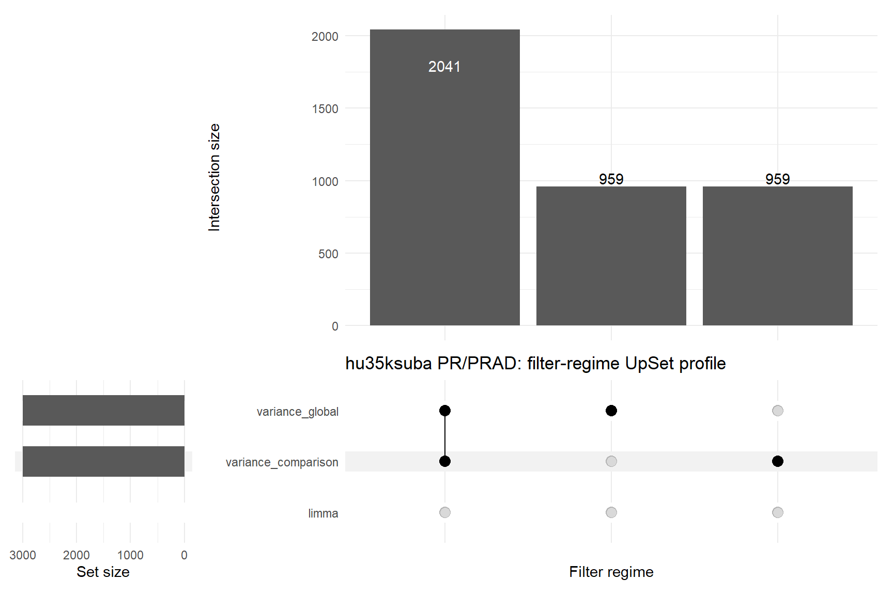
| Metric | Value |
|---|---|
| Filter regimes | 2 |
| Union probes | 3959 |
| Shared by all 3 | 0 |
| Shared fraction | 0.0% |
| limma probes | 0 |
| Variance comparison probes | 3000 |
| Variance global probes | 3000 |
| limma-only | 0 |
| Variance comparison-only | 959 |
| Variance global-only | 959 |
| Median Jaccard | 51.6% |
| Feature-space stability class | feature-space moderately stable |
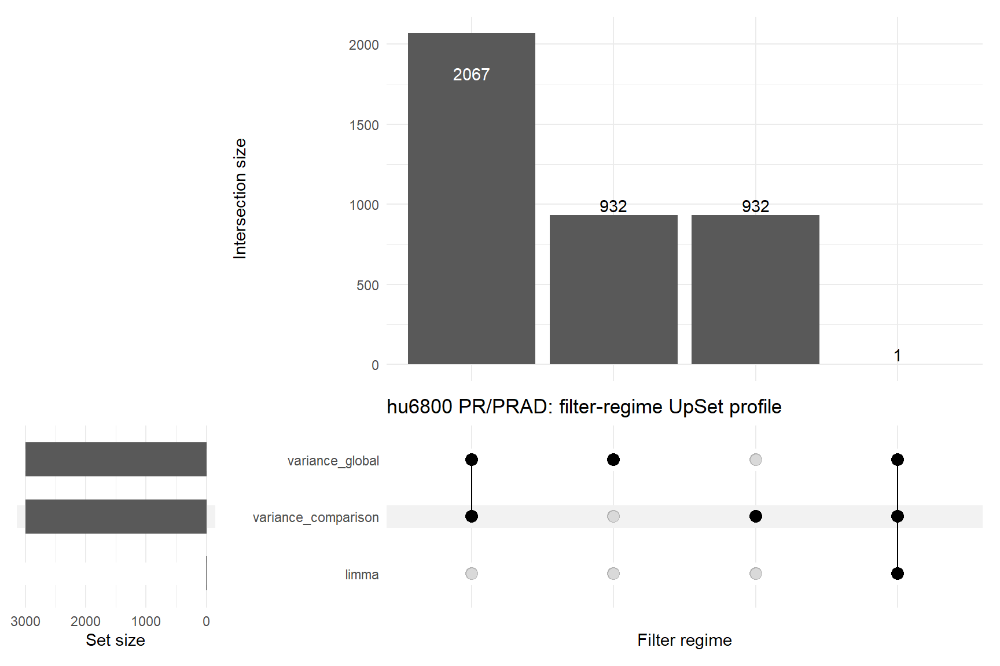
| Metric | Value |
|---|---|
| Filter regimes | 3 |
| Union probes | 3932 |
| Shared by all 3 | 1 |
| Shared fraction | 0.0% |
| limma probes | 1 |
| Variance comparison probes | 3000 |
| Variance global probes | 3000 |
| limma-only | 0 |
| Variance comparison-only | 932 |
| Variance global-only | 932 |
| Median Jaccard | 0.0% |
| Feature-space stability class | feature-space perturbation-sensitive |
PR/PRAD: Structural Grammar
This tab converts the structure-specific warehouse record into a compact interpretive grammar for the selected comparison. Biological annotations remain as functional overlays on the structural state rather than causal pathway assignments.
Archetypal state
The system occupies an expansion-dominant perturbational state.
Modal Quadrant: QI
Quadrant Stability Fraction: 1.000
Archetype Label: Available stable QI
Archetype Stability: Stable among available assignments
Structural Confidence: Low
Structural interpretation
PR/PRAD: The system occupies an expansion-dominant perturbational state.
The structural pattern combines the following reader-level calls:
- Tumor manifold expands relative to the normal reference state.
- Expression geometry becomes more constrained or elongated.
- Spectral structure retains or gains excess component concentration.
- Variance is spread across more spectral components.
Normal and tumor samples separate in latent space.
Structural geometry
Tumor manifold expands relative to the normal reference state.
Effective-Rank Δ: 0.385
Expression geometry becomes more constrained or elongated.
Kappa Δ: 3.062
Spectral structure retains or gains excess component concentration.
MP Excess Spectral Mass Δ: 8.923
Variance is spread across more spectral components.
MP Participation-Ratio Δ: 0.649
Latent geometry
Normal and tumor samples separate in latent space.
Latent Centroid Distance: 13.490
Biological structural calls
| biological_structural_call | n_terms |
|---|---|
| Concordant expansion | 32 |
Dominant GO semantic blocks
| semantic_block_name | n_terms | n_sig_complexity | n_sig_entropy_spectral | total_sig |
|---|---|---|---|---|
| protein binding | 125 | 4 | 37 | 41 |
| biological_process | 59 | 6 | 17 | 23 |
| molecular_function | 58 | 2 | 16 | 18 |
| signaling receptor binding | 38 | 3 | 13 | 16 |
| peptidase activity | 27 | 0 | 16 | 16 |
| protein-containing complex binding | 30 | 2 | 13 | 15 |
| enzyme binding | 51 | 4 | 10 | 14 |
| enzyme regulator activity | 47 | 1 | 13 | 14 |
Top GO annotation examples
| mode | term | semantic_block | structural_call | joint_rank |
|---|---|---|---|---|
| GO_MF | chemokine activity | signaling receptor binding | Concordant expansion | 600.000 |
| GO_BP | fatty acid beta-oxidation using acyl-CoA oxidase | fatty acid metabolic process | Concordant expansion | 600.000 |
| GO_MF | beta-catenin binding | protein binding | Concordant expansion | 600.000 |
| GO_BP | response to L-glutamate | response to nitrogen compound | Concordant expansion | 600.000 |
| GO_BP | long-chain fatty-acyl-CoA biosynthetic process | nucleoside phosphate biosynthetic process | Concordant expansion | 302.000 |
| GO_MF | cholesterol transfer activity | transporter activity | Concordant expansion | 302.000 |
| GO_MF | AP-3 adaptor complex binding | protein-containing complex binding | Concordant expansion | 301.699 |
| GO_BP | dendrite development | neuron projection development | Concordant expansion | 301.699 |
| GO_MF | phosphatidylinositol phospholipase C activity | phosphoric ester hydrolase activity | Concordant expansion | 301.699 |
| GO_BP | protein export from nucleus | protein transport | Concordant expansion | 301.523 |
| GO_MF | small molecule binding | small molecule binding | Concordant expansion | 301.398 |
| GO_BP | peripheral nervous system development | nervous system development | Concordant expansion | 301.398 |
KEGG program overlay
| term | structural_call | joint_rank |
|---|---|---|
| Salivary secretion | Concordant expansion | 301.523 |
Hallmark / MSigDB program overlay
No warehouse rows available for this comparison.
Interpretive caution
These annotations identify functional systems that co-occur with the structural state. They should be read as structural-functional annotation, not as causal pathway assignment.
PR/PRAD: Structural Phenotype
This section summarizes the integrated structural phenotype across platform and feature-projection contexts. The first table is oriented as a descriptor-by-context matrix so that projection-sensitive structural shifts can be read horizontally across platform/projection runs.
Integrated structural phenotype
| Descriptor | hu35ksuba var-comp |
hu35ksuba var-global |
hu6800 var-comp |
hu6800 var-global |
|---|---|---|---|---|
| Complexity: Δ Effective Rank | 0.270 | 0.280 | 0.490 | 0.500 |
| Complexity: Δ κ | 14.240 | 12.080 | -5.870 | -8.200 |
| Entropy: Δ Spectral Entropy | 0.221 | 0.240 | 0.476 | 0.496 |
| Entropy: Δ Shannon Entropy | 0.152 | 0.153 | 0.194 | 0.193 |
| MP: Δ Spectral Entropy | 0.173 | 0.183 | 0.030 | 0.034 |
| MP: Δ Participation Ratio | 1.142 | 1.457 | -0.011 | 0.009 |
| Latent: Δ Participation Ratio | 0.022 | 0.022 | 0.022 | 0.022 |
| Latent: Δ Eigenvalue Entropy | 0.049 | 0.049 | 0.049 | 0.049 |
| Latent: Centroid Distance | 13.490 | 13.490 | 13.490 | 13.490 |
Metric-level summary
| engine | Metric | n_runs | mean_value | median_value | n_tumor_greater | n_tumor_lower |
|---|---|---|---|---|---|---|
| complexity | Composite Kappa | 4 | -9.483 | -8.705 | 2 | 2 |
| complexity | Effrank | 4 | 0.385 | 0.385 | 4 | 0 |
| complexity | Kappa | 4 | 3.062 | 3.105 | 2 | 2 |
| complexity | Sparsity | 4 | 0.000 | 0.000 | 0 | 0 |
| entropy | Shannon | 4 | 0.173 | 0.173 | 4 | 0 |
| entropy | Spectral | 4 | 0.358 | 0.358 | 4 | 0 |
| latent | Centroid Distance | 1 | 13.490 | 13.490 | 1 | 0 |
| latent | Latent Eig Entropy | 1 | 0.049 | 0.049 | 1 | 0 |
| latent | Latent Pr | 1 | 0.022 | 0.022 | 1 | 0 |
| mp_spectral | Excess Spectral Mass | 4 | 8.923 | 11.332 | 2 | 2 |
| mp_spectral | Largest Eigenvalue Fraction | 4 | -0.060 | -0.053 | 0 | 4 |
| mp_spectral | Participation Ratio | 4 | 0.649 | 0.575 | 3 | 1 |
| mp_spectral | Spectral Entropy | 4 | 0.105 | 0.103 | 4 | 0 |
Complexity Engine
The complexity engine is reported using all probes retained after the active feature-projection filter. The omitted gene_set_mode field is therefore implicitly FULL for this tab and is not shown as a separate table column.
Complexity descriptor matrix
| Metric | hu35ksuba var-comp |
hu35ksuba var-global |
hu6800 var-comp |
hu6800 var-global |
|---|---|---|---|---|
| Shared Probes | 3000.000 | 3000.000 | 3000.000 | 3000.000 |
| Normal Samples | 9.000 | 9.000 | 7.000 | 7.000 |
| Tumor Samples | 10.000 | 10.000 | 8.000 | 8.000 |
| κ Normal | 104.680 | 107.440 | 102.940 | 111.720 |
| κ Tumor | 118.920 | 119.520 | 97.070 | 103.520 |
| Δ κ | 14.240 | 12.080 | -5.870 | -8.200 |
| Effective Rank Normal | 1.620 | 1.570 | 1.230 | 1.220 |
| Effective Rank Tumor | 1.890 | 1.850 | 1.720 | 1.720 |
| Δ Effective Rank | 0.270 | 0.280 | 0.490 | 0.500 |
| Δ Sparsity | 0.000 | 0.000 | 0.000 | 0.000 |
| Direction | gained | gained | lost | lost |
| Permutation p | 0.410 | 0.420 | 0.670 | 0.550 |
| Permutation FDR | 1.000 | 1.000 | 0.997 | 1.000 |
| Status | ok | ok | ok | ok |
Entropy Engine
The entropy engine is reported using all probes retained after the active feature-projection filter. The omitted gene_set_mode field is therefore implicitly FULL for this tab and is not shown as a separate table column.
Entropy descriptor matrix
| Metric | hu35ksuba var-comp |
hu35ksuba var-global |
hu6800 var-comp |
hu6800 var-global |
|---|---|---|---|---|
| Covariance Space | sample | sample | sample | sample |
| Shared Probes | 3000 | 3000 | 3000 | 3000 |
| Shannon Entropy Normal | 14.701 | 14.7 | 14.327 | 14.331 |
| Shannon Entropy Tumor | 14.853 | 14.853 | 14.521 | 14.524 |
| Δ Shannon Entropy | 0.152 | 0.153 | 0.194 | 0.193 |
| Shannon Direction | mildly chaotic | mildly chaotic | mildly chaotic | mildly chaotic |
| Spectral Entropy Normal | 0.694 | 0.649 | 0.303 | 0.286 |
| Spectral Entropy Tumor | 0.915 | 0.889 | 0.779 | 0.782 |
| Δ Spectral Entropy | 0.221 | 0.24 | 0.476 | 0.496 |
| Spectral Direction | mildly chaotic | mildly chaotic | mildly chaotic | mildly chaotic |
| Spectral Permutation p | 0.08 | 0.08 | 0.01 | 0.02 |
| Spectral Permutation FDR | 0.193 | 0.24 | 0.065 | 0.13 |
| Status | ok | ok | ok | ok |
MP Spectral Engine
The MP spectral engine is reported using all probes retained after the active feature-projection filter. The omitted gene_set_mode field is therefore implicitly FULL for this tab and is not shown as a separate table column.
MP spectral descriptor matrix
| Metric | hu35ksuba var-comp |
hu35ksuba var-global |
hu6800 var-comp |
hu6800 var-global |
|---|---|---|---|---|
| Normal Samples | 9 | 9 | 7 | 7 |
| Tumor Samples | 10 | 10 | 8 | 8 |
| Normal Features | 3000 | 3000 | 3000 | 3000 |
| Tumor Features | 3000 | 3000 | 3000 | 3000 |
| Δ Largest Eigenvalue Fraction | -0.104 | -0.131 | -0.003 | -0.003 |
| Δ Spikes | 2 | 2 | 0 | 0 |
| Δ Spike Fraction | 0.001 | 0.001 | 0 | 0 |
| Δ Excess Spectral Mass | -131.185 | -89.804 | 144.215 | 112.468 |
| Δ Spectral Entropy | 0.173 | 0.183 | 0.03 | 0.034 |
| Δ Participation Ratio | 1.142 | 1.457 | -0.011 | 0.009 |
| Paired Status | ok | ok | ok | ok |
| chip | filter_regime | latent_model_id | n_normal | n_tumor | pr_normal | pr_tumor | pr_delta | eig_entropy_normal | eig_entropy_tumor | eig_entropy_delta | anisotropy_delta | radius_delta | centroid_distance |
|---|---|---|---|---|---|---|---|---|---|---|---|---|---|
| hu35ksuba | variance_global | hu35ksuba_variance_global_top3000_vae_z10 | 7 | 8 | 1.913 | 1.935 | 0.022 | 0.945 | 0.994 | 0.049 | 0.005 | 17.21 | 13.49 |
This section reports the quadrant-level perturbational state of the selected normal/tumor comparison. The first map places the comparison-level centroid in the broader atlas of cancer comparisons. The second map shows the six platform × feature-projection assignments that determine the comparison’s quadrant stability.
Global comparison position map
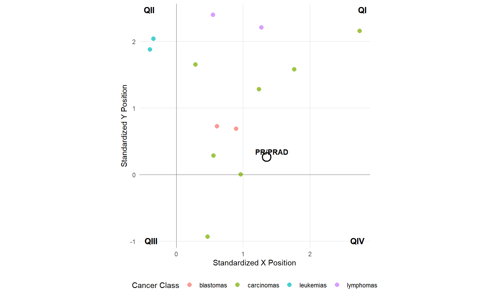
Assignment stability map
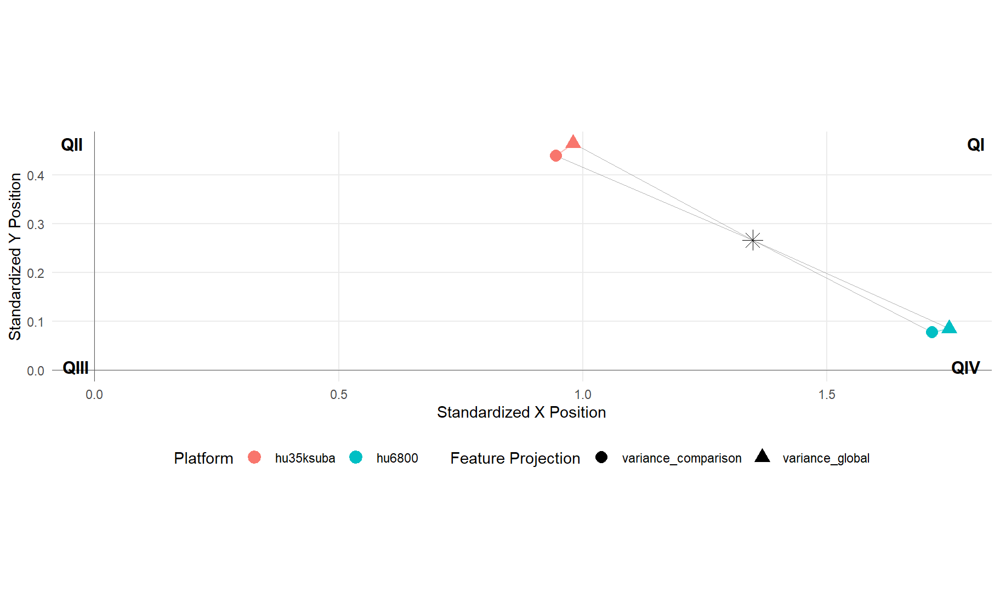
| Platform | Feature Projection | Perturbational State | Structural Interpretation | Assignment Confidence | X Descriptor | Y Descriptor | Std. X Position | Std. Y Position | Boundary Margin | Directional Agreement |
|---|---|---|---|---|---|---|---|---|---|---|
| hu35ksuba | variance_comparison | QI | coordinated structural expansion | low | complexity__effrank_delta | mp__spectral_entropy_delta | 0.945 | 0.439 | 0.439 | 100.0% |
| hu35ksuba | variance_global | QI | coordinated structural expansion | low | complexity__effrank_delta | mp__spectral_entropy_delta | 0.980 | 0.465 | 0.465 | 100.0% |
| hu6800 | variance_comparison | QI | coordinated structural expansion | low | complexity__effrank_delta | mp__spectral_entropy_delta | 1.716 | 0.077 | 0.077 | 100.0% |
| hu6800 | variance_global | QI | coordinated structural expansion | low | complexity__effrank_delta | mp__spectral_entropy_delta | 1.751 | 0.085 | 0.085 | 100.0% |
| Comparison | Assignments | Platforms | Feature Projections | Observed Quadrants | Modal Perturbational State | Modal Stability | Fully Stable | High-Confidence Share | Median Boundary Margin | Stability Class |
|---|---|---|---|---|---|---|---|---|---|---|
| PR/PRAD | 4 | 2 | 2 | 1 | QI | 100.0% | Yes | 0.0% | 0.262 | cross-chip/cross-filter stable |
Reading guide. QI, QII, QIII, and QIV denote perturbational states in the standardized structural coordinate system. Std. X and Std. Y are report-level structural coordinates, not sample-level PCA axes. Boundary margin is the standardized distance from the nearest quadrant boundary; larger values indicate assignments farther from sign-transition boundaries. Directional agreement is the fraction of contributing structural engines supporting the same directional sign pattern. Modal stability is the fraction of platform/filter assignments occupying the dominant perturbational state.
Cross-engine directional concordance
| Metric | hu35ksuba var-comp |
hu35ksuba var-global |
hu6800 var-comp |
hu6800 var-global |
|---|---|---|---|---|
| Complexity Direction | positive | positive | positive | positive |
| Entropy Direction | positive | positive | positive | positive |
| MP Direction | positive | positive | positive | positive |
| Latent Direction | positive | positive | positive | positive |
| Metrics Available | 4 | 4 | 4 | 4 |
| Positive Metrics | 4 | 4 | 4 | 4 |
| Negative Metrics | 0 | 0 | 0 | 0 |
| Majority Direction | positive | positive | positive | positive |
| Agreement Fraction | 1 | 1 | 1 | 1 |
Cross-engine discordance archetypes
| Metric | hu35ksuba var-comp |
hu35ksuba var-global |
hu6800 var-comp |
hu6800 var-global |
|---|---|---|---|---|
| Complexity Direction | positive | positive | positive | positive |
| Entropy Direction | positive | positive | positive | positive |
| MP Direction | positive | positive | positive | positive |
| Latent Direction | positive | positive | positive | positive |
| Modal Direction | positive | positive | positive | positive |
| Agreement Fraction | 1 | 1 | 1 | 1 |
| Discordance Class | full_agreement | full_agreement | full_agreement | full_agreement |
| Engine Coverage | four_engine_overlay | four_engine_overlay | four_engine_overlay | four_engine_overlay |
| Discordance Archetype | full_four_engine_agreement | full_four_engine_agreement | full_four_engine_agreement | full_four_engine_agreement |
| comparison | n_assignments | modal_quadrant | modal_quadrant_fraction | mean_quadrant_margin | median_quadrant_margin | min_quadrant_margin | chip_instability_fraction | filter_instability_fraction | x_sign_flips | y_sign_flips | both_axis_flips | total_boundary_crossings | robustness_class | structural_confidence |
|---|---|---|---|---|---|---|---|---|---|---|---|---|---|---|
| PR/PRAD | 4 | QIII | 0.5 | 0.414 | 0.414 | 0.3 | 1 | 0 | 1 | 0 | 0 | 0 | single_axis_flipper | low |
| Metric | hu35ksuba var-comp |
hu35ksuba var-global |
hu6800 var-comp |
hu6800 var-global |
|---|---|---|---|---|
| Robustness Quadrant | QIV | QIV | QIII | QIII |
| X-Axis Robustness | 0.529 | 0.529 | -0.300 | -0.300 |
| Y-Axis Robustness | -0.838 | -0.838 | -0.881 | -0.881 |
| Distance to X-Axis | 0.838 | 0.838 | 0.881 | 0.881 |
| Distance to Y-Axis | 0.529 | 0.529 | 0.300 | 0.300 |
| Distance to Origin | 0.991 | 0.991 | 0.931 | 0.931 |
| Quadrant Margin | 0.529 | 0.529 | 0.300 | 0.300 |
| X Sign | + | + | - | - |
| Y Sign | - | - | - | - |
PR/PRAD: GO Semantic Metadata
The GO semantic layer summarizes functional annotation landscapes projected onto transcriptomic structural geometry. These tables group GO BP and GO MF terms into semantic blocks; they should be read as annotation topology, not as direct mechanistic inference.
GO semantic coverage
| gene_set_mode | n_context_rows | n_semantic_blocks | n_terms | n_sig_complexity | n_sig_entropy_spectral | median_shared_probes |
|---|---|---|---|---|---|---|
| GO_BP | 1806 | 329 | 2715 | 119 | 703 | 8.500 |
| GO_MF | 660 | 47 | 934 | 40 | 260 | 10.000 |
GO semantic panels
Semantic context summary
| n_semantic_blocks | n_terms | n_sig_complexity | n_sig_entropy_spectral | median_shared_probes |
|---|---|---|---|---|
| 291 | 1107 | 49 | 80 | 8.000 |
Dominant GO semantic blocks
| semantic_block_name | n_terms | n_sig_complexity | n_sig_entropy_spectral | total_sig | mean_shared_probes |
|---|---|---|---|---|---|
| intracellular signal transduction | 6 | 2 | 0 | 2 | 23.667 |
| regulation of cellular response to stress | 6 | 2 | 0 | 2 | 12.667 |
| central nervous system development | 4 | 1 | 1 | 2 | 13.500 |
| positive regulation of cell population proliferation | 2 | 1 | 1 | 2 | 9.000 |
| metal ion transport | 1 | 1 | 1 | 2 | 9.000 |
| nucleoside phosphate biosynthetic process | 1 | 1 | 1 | 2 | 7.000 |
| G protein-coupled receptor signaling pathway | 4 | 0 | 2 | 2 | 18.250 |
| positive regulation of protein metabolic process | 3 | 0 | 2 | 2 | 8.000 |
| cell-cell adhesion | 2 | 0 | 2 | 2 | 24.500 |
| nucleotide metabolic process | 2 | 0 | 2 | 2 | 5.000 |
| regulation of metal ion transport | 2 | 0 | 2 | 2 | 8.500 |
| regulation of intracellular signal transduction | 9 | 1 | 0 | 1 | 7.778 |
| negative regulation of intracellular signal transduction | 6 | 1 | 0 | 1 | 11.833 |
| negative regulation of multicellular organismal process | 6 | 1 | 0 | 1 | 8.000 |
| actin cytoskeleton organization | 3 | 1 | 0 | 1 | 23.667 |
| chromatin organization | 3 | 1 | 0 | 1 | 6.667 |
| mRNA catabolic process | 3 | 1 | 0 | 1 | 7.333 |
| biological_process | 2 | 1 | 0 | 1 | 9.500 |
| cellular response to growth factor stimulus | 2 | 1 | 0 | 1 | 13.500 |
| endomembrane system organization | 2 | 1 | 0 | 1 | 6.000 |
Semantic context summary
| n_semantic_blocks | n_terms | n_sig_complexity | n_sig_entropy_spectral | median_shared_probes |
|---|---|---|---|---|
| 43 | 413 | 17 | 39 | 8.833 |
Dominant GO semantic blocks
| semantic_block_name | n_terms | n_sig_complexity | n_sig_entropy_spectral | total_sig | mean_shared_probes |
|---|---|---|---|---|---|
| hydrolase activity | 3 | 0 | 3 | 3 | 5.333 |
| protein-containing complex binding | 1 | 1 | 1 | 2 | 5.000 |
| catalytic activity | 2 | 0 | 2 | 2 | 32.000 |
| monoatomic cation channel activity | 2 | 0 | 2 | 2 | 9.500 |
| peptidase activity | 2 | 0 | 2 | 2 | 19.000 |
| enzyme binding | 3 | 1 | 0 | 1 | 8.667 |
| enzyme binding | 2 | 1 | 0 | 1 | 37.000 |
| hydrolase activity, acting on ester bonds | 2 | 1 | 0 | 1 | 6.000 |
| lipid binding | 2 | 1 | 0 | 1 | 16.500 |
| transferase activity | 2 | 1 | 0 | 1 | 17.500 |
| anion binding | 1 | 1 | 0 | 1 | 9.000 |
| binding | 1 | 1 | 0 | 1 | 21.000 |
| enzyme binding | 1 | 1 | 0 | 1 | 5.000 |
| enzyme regulator activity | 1 | 1 | 0 | 1 | 8.000 |
| molecular function regulator activity | 1 | 1 | 0 | 1 | 9.000 |
| molecular function regulator activity | 1 | 1 | 0 | 1 | 5.000 |
| molecular_function | 1 | 1 | 0 | 1 | 5.000 |
| protein binding | 1 | 1 | 0 | 1 | 7.000 |
| protein binding | 1 | 1 | 0 | 1 | 13.000 |
| transmembrane transporter activity | 1 | 1 | 0 | 1 | 8.000 |
Semantic context summary
| n_semantic_blocks | n_terms | n_sig_complexity | n_sig_entropy_spectral | median_shared_probes |
|---|---|---|---|---|
| 316 | 1608 | 70 | 623 | 9.000 |
Dominant GO semantic blocks
| semantic_block_name | n_terms | n_sig_complexity | n_sig_entropy_spectral | total_sig | mean_shared_probes |
|---|---|---|---|---|---|
| positive regulation of cytokine production | 12 | 0 | 6 | 6 | 16.167 |
| blood vessel morphogenesis | 5 | 2 | 3 | 5 | 20.800 |
| G protein-coupled receptor signaling pathway | 7 | 1 | 4 | 5 | 31.857 |
| alcohol metabolic process | 4 | 1 | 4 | 5 | 10.500 |
| protein-containing complex assembly | 4 | 1 | 3 | 4 | 11.250 |
| nervous system development | 3 | 1 | 3 | 4 | 42.667 |
| positive regulation of intracellular signal transduction | 8 | 0 | 4 | 4 | 23.000 |
| central nervous system development | 5 | 0 | 4 | 4 | 16.200 |
| cellular response to growth factor stimulus | 4 | 0 | 4 | 4 | 16.000 |
| immune response-activating signaling pathway | 4 | 0 | 4 | 4 | 19.500 |
| positive regulation of RNA metabolic process | 7 | 1 | 2 | 3 | 75.429 |
| cell surface receptor protein tyrosine kinase signaling pathway | 5 | 1 | 2 | 3 | 16.000 |
| response to other organism | 4 | 1 | 2 | 3 | 24.750 |
| actin cytoskeleton organization | 3 | 1 | 2 | 3 | 15.000 |
| behavior | 3 | 1 | 2 | 3 | 10.333 |
| cellular response to nitrogen compound | 3 | 1 | 2 | 3 | 13.333 |
| fatty acid metabolic process | 3 | 1 | 2 | 3 | 10.333 |
| fatty acid metabolic process | 3 | 1 | 2 | 3 | 11.000 |
| neuron projection development | 2 | 1 | 2 | 3 | 22.500 |
| protein transport | 2 | 1 | 2 | 3 | 31.500 |
Semantic context summary
| n_semantic_blocks | n_terms | n_sig_complexity | n_sig_entropy_spectral | median_shared_probes |
|---|---|---|---|---|
| 47 | 521 | 23 | 221 | 10.000 |
Dominant GO semantic blocks
| semantic_block_name | n_terms | n_sig_complexity | n_sig_entropy_spectral | total_sig | mean_shared_probes |
|---|---|---|---|---|---|
| enzyme binding | 3 | 1 | 3 | 4 | 16.000 |
| enzyme regulator activity | 6 | 0 | 4 | 4 | 18.667 |
| molecular function regulator activity | 6 | 0 | 4 | 4 | 36.000 |
| acyltransferase activity | 2 | 1 | 2 | 3 | 19.000 |
| peptidase activity | 4 | 0 | 3 | 3 | 34.750 |
| protein kinase activity | 4 | 0 | 3 | 3 | 46.000 |
| cation binding | 3 | 0 | 3 | 3 | 255.000 |
| phosphoric ester hydrolase activity | 3 | 0 | 3 | 3 | 6.000 |
| protein binding | 3 | 0 | 3 | 3 | 39.333 |
| DNA binding | 4 | 1 | 1 | 2 | 53.250 |
| phosphoric ester hydrolase activity | 3 | 1 | 1 | 2 | 21.667 |
| gated channel activity | 2 | 1 | 1 | 2 | 8.000 |
| small molecule binding | 2 | 1 | 1 | 2 | 11.000 |
| hydrolase activity, acting on ester bonds | 1 | 1 | 1 | 2 | 6.000 |
| phosphoric ester hydrolase activity | 1 | 1 | 1 | 2 | 6.000 |
| protein binding | 1 | 1 | 1 | 2 | 28.000 |
| signaling receptor binding | 1 | 1 | 1 | 2 | 17.000 |
| transporter activity | 1 | 1 | 1 | 2 | 5.000 |
| DNA binding | 5 | 0 | 2 | 2 | 40.000 |
| DNA binding | 4 | 0 | 2 | 2 | 111.750 |
This section embeds the biological structural-overlay module. Chips are treated as distinct observational systems, and filter regimes are treated as feature-space perturbations rather than pooled preprocessing settings.
PR/PRAD: Biological Gene-Set Structural Report
This report is exploratory and downstream of the structural-inference framework. It summarizes GO, KEGG, and MSigDB/Hallmark gene-set results associated with a single normal–tumor comparison. Biological terms are interpreted as annotations of structurally characterized tumor states, not as the primary evidentiary basis of the framework.
Report coverage
| comparison | alpha | enabled_gene_set_modes | n_biological_rows | n_skipped_chip_mode_gene_sets |
|---|---|---|---|---|
| PR/PRAD | 0.05 | GO_BP, GO_MF, KEGG, MSIGDB | 7576 | 5510 |
Context inventory
| comparison | chip | filter_regime | gene_set_mode | engine | n_terms | n_gene_sets | n_significant_complexity | n_significant_entropy_spectral | median_shared_probes |
|---|---|---|---|---|---|---|---|---|---|
| PR/PRAD | hu35ksuba | variance_top3000 | GO_BP | complexity | 1107 | 1107 | 49 | 0 | 8 |
| PR/PRAD | hu35ksuba | variance_top3000 | GO_BP | entropy | 1107 | 1107 | 0 | 80 | 8 |
| PR/PRAD | hu35ksuba | variance_top3000 | GO_MF | complexity | 413 | 413 | 17 | 0 | 9 |
| PR/PRAD | hu35ksuba | variance_top3000 | GO_MF | entropy | 413 | 413 | 0 | 39 | 9 |
| PR/PRAD | hu35ksuba | variance_top3000 | KEGG | complexity | 56 | 56 | 4 | 0 | 22 |
| PR/PRAD | hu35ksuba | variance_top3000 | KEGG | entropy | 56 | 56 | 0 | 8 | 22 |
| PR/PRAD | hu35ksuba | variance_top3000 | MSIGDB | complexity | 13 | 13 | 0 | 0 | 47 |
| PR/PRAD | hu35ksuba | variance_top3000 | MSIGDB | entropy | 13 | 13 | 0 | 5 | 47 |
| PR/PRAD | hu6800 | variance_top3000 | GO_BP | complexity | 1608 | 1608 | 70 | 0 | 9 |
| PR/PRAD | hu6800 | variance_top3000 | GO_BP | entropy | 1608 | 1608 | 0 | 623 | 9 |
| PR/PRAD | hu6800 | variance_top3000 | GO_MF | complexity | 521 | 521 | 23 | 0 | 10 |
| PR/PRAD | hu6800 | variance_top3000 | GO_MF | entropy | 521 | 521 | 0 | 221 | 10 |
| PR/PRAD | hu6800 | variance_top3000 | KEGG | complexity | 57 | 57 | 1 | 0 | 48 |
| PR/PRAD | hu6800 | variance_top3000 | KEGG | entropy | 57 | 57 | 0 | 43 | 48 |
| PR/PRAD | hu6800 | variance_top3000 | MSIGDB | complexity | 13 | 13 | 0 | 0 | 95 |
| PR/PRAD | hu6800 | variance_top3000 | MSIGDB | entropy | 13 | 13 | 0 | 9 | 95 |
Biological result panels
The panels below intentionally separate chips and filtering regimes. Chips are treated as distinct observational systems, and filter regimes are treated as feature-space perturbations rather than interchangeable preprocessing settings.
Context summary
| engine | n_rows | n_gene_sets | n_significant_complexity | n_significant_entropy_spectral | median_shared_probes |
|---|---|---|---|---|---|
| complexity | 1107 | 1107 | 49 | 0 | 8.000 |
| entropy | 1107 | 1107 | 0 | 80 | 8.000 |
Complexity signal plot
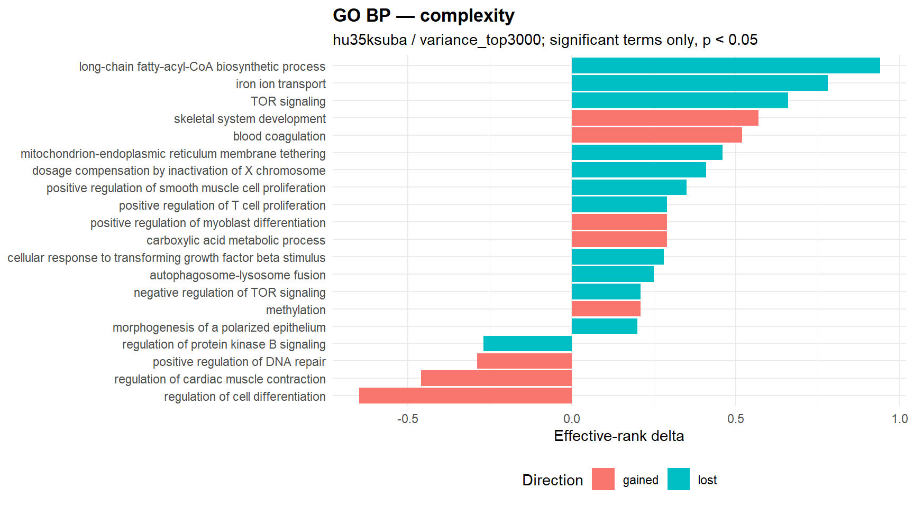
Entropy signal plot
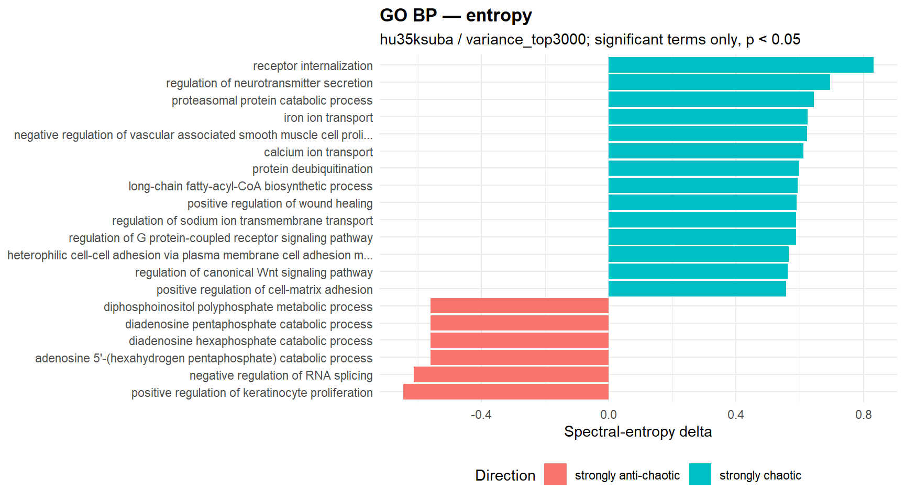
Significant complexity terms
| gene_set | semantic_block | n_shared_probes | effrank Δ | kappa Δ | direction | p_perm | status |
|---|---|---|---|---|---|---|---|
| long-chain fatty-acyl-CoA biosynthetic process | nucleoside phosphate biosynthetic process | 7 | 0.940 | -2197.910 | lost | <0.001 | ok |
| regulation of cell differentiation | regulation of cell differentiation | 10 | -0.650 | 306169.180 | gained | <0.001 | ok |
| dosage compensation by inactivation of X chromosome | chromatin organization | 5 | 0.410 | -159.640 | lost | <0.001 | ok |
| endosome organization | vesicle organization | 9 | 0.090 | -163799.570 | lost | <0.001 | ok |
| I-kappaB kinase/NF-kappaB signaling | intracellular signal transduction | 9 | -0.080 | -105992.310 | lost | <0.001 | ok |
| cellular response to interferon-gamma | cellular response to cytokine stimulus | 14 | 0.080 | 1561.560 | gained | <0.001 | ok |
| cholesterol metabolic process | alcohol metabolic process | 11 | 0.050 | 56439.100 | gained | <0.001 | ok |
| positive regulation of smooth muscle cell proliferation | positive regulation of cell population proliferation | 7 | 0.350 | -337.010 | lost | 0.010 | ok |
| regulation of protein kinase B signaling | regulation of intracellular signal transduction | 7 | -0.270 | -1166.780 | lost | 0.010 | ok |
| negative regulation of TOR signaling | negative regulation of intracellular signal transduction | 6 | 0.210 | -379.690 | lost | 0.010 | ok |
| methylation | biological_process | 27 | 0.210 | 257.640 | gained | 0.010 | ok |
| mitotic cytokinesis | mitotic cell cycle process | 14 | -0.190 | 644.580 | gained | 0.010 | ok |
| cellular response to retinoic acid | cellular response to lipid | 9 | -0.120 | -163925.010 | lost | 0.010 | ok |
| positive regulation of bone mineralization | positive regulation of developmental process | 10 | 0.050 | 18382.950 | gained | 0.010 | ok |
| response to progesterone | response to lipid | 5 | 0.040 | -159.840 | lost | 0.010 | ok |
| parkin-mediated stimulation of mitophagy in response to mitochondrial depolarization | macroautophagy | 5 | 0.030 | -338.890 | lost | 0.010 | ok |
| plasma membrane tubulation | endomembrane system organization | 5 | -0.020 | 295.990 | gained | 0.010 | ok |
| skeletal system development | system development | 17 | 0.570 | 438.340 | gained | 0.020 | ok |
| regulation of cardiac muscle contraction | regulation of blood circulation | 5 | -0.460 | 222.160 | gained | 0.020 | ok |
| carboxylic acid metabolic process | carboxylic acid metabolic process | 5 | 0.290 | 214.360 | gained | 0.020 | ok |
Significant entropy terms
| gene_set | semantic_block | n_shared_probes | spectral Δ | shannon Δ | spectral_direction | p_perm_spectral | p_perm_shannon | status |
|---|---|---|---|---|---|---|---|---|
| negative regulation of vascular associated smooth muscle cell proliferation | regulation of cell population proliferation | 6 | 0.623 | 0.150 | strongly chaotic | <0.001 | NA | ok |
| regulation of G protein-coupled receptor signaling pathway | G protein-coupled receptor signaling pathway | 10 | 0.588 | 0.152 | strongly chaotic | <0.001 | NA | ok |
| protein secretion | secretion by cell | 10 | 0.479 | 0.154 | mildly chaotic | <0.001 | NA | ok |
| cellular glucose homeostasis | intracellular chemical homeostasis | 6 | 0.425 | 0.154 | mildly chaotic | <0.001 | NA | ok |
| phagosome maturation | organelle organization | 5 | 0.389 | 0.156 | mildly chaotic | <0.001 | NA | ok |
| mRNA stabilization | mRNA catabolic process | 9 | 0.387 | 0.152 | mildly chaotic | <0.001 | NA | ok |
| protein K48-linked ubiquitination | protein modification by small protein conjugation or removal | 35 | 0.355 | 0.151 | mildly chaotic | <0.001 | NA | ok |
| platelet dense granule organization | vesicle organization | 6 | 0.319 | 0.154 | mildly chaotic | <0.001 | NA | ok |
| cell-cell adhesion | cell-cell adhesion | 44 | 0.265 | 0.151 | mildly chaotic | <0.001 | NA | ok |
| regulation of neurotransmitter secretion | signal release | 5 | 0.696 | 0.153 | strongly chaotic | 0.010 | NA | ok |
| positive regulation of keratinocyte proliferation | positive regulation of cell population proliferation | 5 | -0.645 | 0.148 | strongly anti-chaotic | 0.010 | NA | ok |
| calcium ion transport | calcium ion transport | 14 | 0.611 | 0.152 | strongly chaotic | 0.010 | NA | ok |
| protein deubiquitination | protein modification by small protein conjugation or removal | 11 | 0.599 | 0.153 | strongly chaotic | 0.010 | NA | ok |
| long-chain fatty-acyl-CoA biosynthetic process | nucleoside phosphate biosynthetic process | 7 | 0.594 | 0.149 | strongly chaotic | 0.010 | NA | ok |
| regulation of sodium ion transmembrane transport | regulation of metal ion transport | 9 | 0.588 | 0.151 | strongly chaotic | 0.010 | NA | ok |
| viral genome replication | biological_process | 8 | 0.543 | 0.155 | strongly chaotic | 0.010 | NA | ok |
| negative regulation of reactive oxygen species biosynthetic process | negative regulation of biosynthetic process | 7 | -0.465 | 0.149 | mildly anti-chaotic | 0.010 | NA | ok |
| regulation of protein stability | regulation of biological quality | 31 | 0.431 | 0.151 | mildly chaotic | 0.010 | NA | ok |
| ion transport | monoatomic ion transport | 73 | 0.426 | 0.151 | mildly chaotic | 0.010 | NA | ok |
| Golgi to plasma membrane protein transport | localization within membrane | 13 | 0.381 | 0.152 | mildly chaotic | 0.010 | NA | ok |
Terms significant in both engines
| gene_set | semantic_block | n_shared_probes | complexity_effrank Δ | complexity_direction | complexity_p_perm | entropy_spectral Δ | entropy_spectral_direction | entropy_p_perm_spectral | joint_rank_score |
|---|---|---|---|---|---|---|---|---|---|
| long-chain fatty-acyl-CoA biosynthetic process | nucleoside phosphate biosynthetic process | 7 | 0.940 | lost | <0.001 | 0.594 | strongly chaotic | 0.010 | 309.653 |
| positive regulation of smooth muscle cell proliferation | positive regulation of cell population proliferation | 7 | 0.350 | lost | 0.010 | 0.315 | mildly chaotic | 0.040 | 3.398 |
| iron ion transport | metal ion transport | 9 | 0.780 | lost | 0.030 | 0.624 | strongly chaotic | 0.040 | 2.921 |
GO semantic clusters
| semantic_cluster_id | semantic_block_name | n_rows | n_terms | n_sig_complexity | n_sig_entropy_spectral | mean_shared_probes |
|---|---|---|---|---|---|---|
| BP_GO_0035556_1 | intracellular signal transduction | 12 | 6 | 2 | 0 | 23.667 |
| BP_GO_0080135_1 | regulation of cellular response to stress | 12 | 6 | 2 | 0 | 12.667 |
| BP_GO_0007186_2 | G protein-coupled receptor signaling pathway | 8 | 4 | 0 | 2 | 18.250 |
| BP_GO_0007417_2 | central nervous system development | 8 | 4 | 1 | 1 | 13.500 |
| BP_GO_0051247_3 | positive regulation of protein metabolic process | 6 | 3 | 0 | 2 | 8.000 |
| BP_GO_0008284_5 | positive regulation of cell population proliferation | 4 | 2 | 1 | 1 | 9.000 |
| BP_GO_0009117_3 | nucleotide metabolic process | 4 | 2 | 0 | 2 | 5.000 |
| BP_GO_0010959_10 | regulation of metal ion transport | 4 | 2 | 0 | 2 | 8.500 |
| BP_GO_0098609_3 | cell-cell adhesion | 4 | 2 | 0 | 2 | 24.500 |
| BP_GO_0030001_4 | metal ion transport | 2 | 1 | 1 | 1 | 9.000 |
| BP_GO_1901293_2 | nucleoside phosphate biosynthetic process | 2 | 1 | 1 | 1 | 7.000 |
| BP_GO_1902531_1 | regulation of intracellular signal transduction | 18 | 9 | 1 | 0 | 7.778 |
| BP_GO_0007166_1 | cell surface receptor signaling pathway | 14 | 7 | 0 | 1 | 14.571 |
| BP_GO_0051241_1 | negative regulation of multicellular organismal process | 12 | 6 | 1 | 0 | 8.000 |
| BP_GO_0070647_1 | protein modification by small protein conjugation or removal | 12 | 6 | 0 | 1 | 39.667 |
| BP_GO_1902532_1 | negative regulation of intracellular signal transduction | 12 | 6 | 1 | 0 | 11.833 |
| BP_GO_0030163_2 | protein catabolic process | 10 | 5 | 0 | 1 | 38.400 |
| BP_GO_0006402_3 | mRNA catabolic process | 8 | 4 | 0 | 1 | 7.750 |
| BP_GO_0006325_4 | chromatin organization | 6 | 3 | 1 | 0 | 6.667 |
| BP_GO_0006402_1 | mRNA catabolic process | 6 | 3 | 1 | 0 | 7.333 |
Context summary
| engine | n_rows | n_gene_sets | n_significant_complexity | n_significant_entropy_spectral | median_shared_probes |
|---|---|---|---|---|---|
| complexity | 413 | 413 | 17 | 0 | 9.000 |
| entropy | 413 | 413 | 0 | 39 | 9.000 |
Complexity signal plot
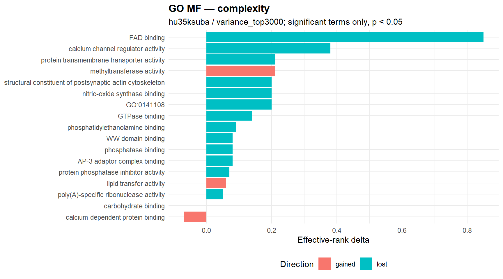
Entropy signal plot
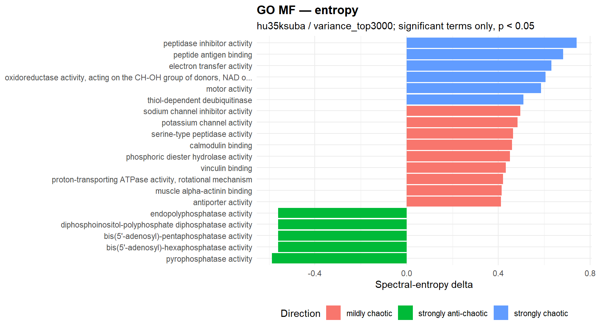
Significant complexity terms
| gene_set | semantic_block | n_shared_probes | effrank Δ | kappa Δ | direction | p_perm | status |
|---|---|---|---|---|---|---|---|
| protein transmembrane transporter activity | transmembrane transporter activity | 8 | 0.210 | -4253.310 | lost | <0.001 | ok |
| lipid transfer activity | transporter activity | 6 | 0.060 | 722.050 | gained | <0.001 | ok |
| FAD binding | anion binding | 9 | 0.850 | -65193.660 | lost | 0.010 | ok |
| methyltransferase activity | transferase activity | 27 | 0.210 | 257.640 | gained | 0.010 | ok |
| GTPase binding | enzyme binding | 5 | 0.140 | -111.640 | lost | 0.010 | ok |
| calcium-dependent protein binding | protein binding | 13 | -0.070 | 1513.200 | gained | 0.010 | ok |
| carbohydrate binding | binding | 21 | 0.000 | 197.780 | gained | 0.010 | ok |
| phosphatase binding | enzyme binding | 5 | 0.080 | -165.940 | lost | 0.020 | ok |
| AP-3 adaptor complex binding | protein-containing complex binding | 5 | 0.080 | -263.290 | lost | 0.020 | ok |
| calcium channel regulator activity | molecular function regulator activity | 9 | 0.380 | -24247.760 | lost | 0.030 | ok |
| nitric-oxide synthase binding | enzyme binding | 5 | 0.200 | -466.070 | lost | 0.030 | ok |
| structural constituent of postsynaptic actin cytoskeleton | molecular_function | 5 | 0.200 | -466.070 | lost | 0.030 | ok |
| GO:0141108 | molecular function regulator activity | 5 | 0.200 | -466.070 | lost | 0.030 | ok |
| WW domain binding | protein binding | 7 | 0.080 | -974.660 | lost | 0.030 | ok |
| poly(A)-specific ribonuclease activity | hydrolase activity, acting on ester bonds | 6 | 0.050 | -386.300 | lost | 0.030 | ok |
| phosphatidylethanolamine binding | lipid binding | 6 | 0.090 | -206.170 | lost | 0.040 | ok |
| protein phosphatase inhibitor activity | enzyme regulator activity | 8 | 0.070 | -2356.740 | lost | 0.040 | ok |
Significant entropy terms
| gene_set | semantic_block | n_shared_probes | spectral Δ | shannon Δ | spectral_direction | p_perm_spectral | p_perm_shannon | status |
|---|---|---|---|---|---|---|---|---|
| electron transfer activity | molecular_function | 9 | 0.631 | 0.151 | strongly chaotic | <0.001 | NA | ok |
| phosphoric diester hydrolase activity | phosphoric ester hydrolase activity | 5 | 0.450 | 0.155 | mildly chaotic | <0.001 | NA | ok |
| muscle alpha-actinin binding | cytoskeletal protein binding | 8 | 0.414 | 0.145 | mildly chaotic | <0.001 | NA | ok |
| serine-type endopeptidase activity | peptidase activity | 20 | 0.381 | 0.153 | mildly chaotic | <0.001 | NA | ok |
| G protein activity | molecular function regulator activity | 21 | 0.350 | 0.154 | mildly chaotic | <0.001 | NA | ok |
| calcium channel activity | monoatomic cation channel activity | 12 | 0.279 | 0.152 | mildly chaotic | <0.001 | NA | ok |
| AP-3 adaptor complex binding | protein-containing complex binding | 5 | 0.095 | 0.143 | neutral | <0.001 | NA | ok |
| thiol-dependent deubiquitinase | peptidase activity | 10 | 0.509 | 0.153 | strongly chaotic | 0.010 | NA | ok |
| serine-type peptidase activity | peptidase activity | 18 | 0.464 | 0.155 | mildly chaotic | 0.010 | NA | ok |
| calmodulin binding | protein binding | 40 | 0.460 | 0.152 | mildly chaotic | 0.010 | NA | ok |
| proton-transporting ATPase activity, rotational mechanism | active transmembrane transporter activity | 5 | 0.420 | 0.155 | mildly chaotic | 0.010 | NA | ok |
| clathrin binding | protein binding | 7 | 0.381 | 0.152 | mildly chaotic | 0.010 | NA | ok |
| peptidase inhibitor activity | enzyme regulator activity | 6 | 0.741 | 0.154 | strongly chaotic | 0.020 | NA | ok |
| peptide antigen binding | binding | 7 | 0.682 | 0.151 | strongly chaotic | 0.020 | NA | ok |
| oxidoreductase activity, acting on the CH-OH group of donors, NAD or NADP as acceptor | oxidoreductase activity | 12 | 0.606 | 0.150 | strongly chaotic | 0.020 | NA | ok |
| endopolyphosphatase activity | hydrolase activity | 5 | -0.560 | 0.145 | strongly anti-chaotic | 0.020 | NA | ok |
| diphosphoinositol-polyphosphate diphosphatase activity | hydrolase activity | 5 | -0.560 | 0.145 | strongly anti-chaotic | 0.020 | NA | ok |
| bis(5’-adenosyl)-hexaphosphatase activity | hydrolase activity | 5 | -0.560 | 0.145 | strongly anti-chaotic | 0.020 | NA | ok |
| bis(5’-adenosyl)-pentaphosphatase activity | hydrolase activity | 5 | -0.560 | 0.145 | strongly anti-chaotic | 0.020 | NA | ok |
| sodium channel inhibitor activity | molecular function regulator activity | 6 | 0.495 | 0.149 | mildly chaotic | 0.020 | NA | ok |
Terms significant in both engines
| gene_set | semantic_block | n_shared_probes | complexity_effrank Δ | complexity_direction | complexity_p_perm | entropy_spectral Δ | entropy_spectral_direction | entropy_p_perm_spectral | joint_rank_score |
|---|---|---|---|---|---|---|---|---|---|
| AP-3 adaptor complex binding | protein-containing complex binding | 5 | 0.080 | lost | 0.020 | 0.095 | neutral | <0.001 | 309.352 |
GO semantic clusters
| semantic_cluster_id | semantic_block_name | n_rows | n_terms | n_sig_complexity | n_sig_entropy_spectral | mean_shared_probes |
|---|---|---|---|---|---|---|
| MF_GO_0016787_1 | hydrolase activity | 6 | 3 | 0 | 3 | 5.333 |
| MF_GO_0003824_6 | catalytic activity | 4 | 2 | 0 | 2 | 32.000 |
| MF_GO_0005261_1 | monoatomic cation channel activity | 4 | 2 | 0 | 2 | 9.500 |
| MF_GO_0008233_7 | peptidase activity | 4 | 2 | 0 | 2 | 19.000 |
| MF_GO_0044877_19 | protein-containing complex binding | 2 | 1 | 1 | 1 | 5.000 |
| MF_GO_0008233_1 | peptidase activity | 8 | 4 | 0 | 1 | 33.250 |
| MF_GO_0030234_5 | enzyme regulator activity | 8 | 4 | 0 | 1 | 5.500 |
| MF_GO_0004674_1 | protein serine/threonine kinase activity | 6 | 3 | 0 | 1 | 29.667 |
| MF_GO_0019899_4 | enzyme binding | 6 | 3 | 1 | 0 | 8.667 |
| MF_GO_0005515_37 | protein binding | 4 | 2 | 0 | 1 | 8.000 |
| MF_GO_0005515_44 | protein binding | 4 | 2 | 0 | 1 | 203.500 |
| MF_GO_0008092_12 | cytoskeletal protein binding | 4 | 2 | 0 | 1 | 6.500 |
| MF_GO_0008092_2 | cytoskeletal protein binding | 4 | 2 | 0 | 1 | 11.500 |
| MF_GO_0008289_9 | lipid binding | 4 | 2 | 1 | 0 | 16.500 |
| MF_GO_0016740_6 | transferase activity | 4 | 2 | 1 | 0 | 17.500 |
| MF_GO_0016788_2 | hydrolase activity, acting on ester bonds | 4 | 2 | 1 | 0 | 6.000 |
| MF_GO_0019899_6 | enzyme binding | 4 | 2 | 1 | 0 | 37.000 |
| MF_GO_0003723_14 | RNA binding | 2 | 1 | 0 | 1 | 6.000 |
| MF_GO_0005215_1 | transporter activity | 2 | 1 | 1 | 0 | 6.000 |
| MF_GO_0005488_12 | binding | 2 | 1 | 1 | 0 | 21.000 |
Context summary
| engine | n_rows | n_gene_sets | n_significant_complexity | n_significant_entropy_spectral | median_shared_probes |
|---|---|---|---|---|---|
| complexity | 56 | 56 | 4 | 0 | 22.000 |
| entropy | 56 | 56 | 0 | 8 | 22.000 |
Complexity signal plot
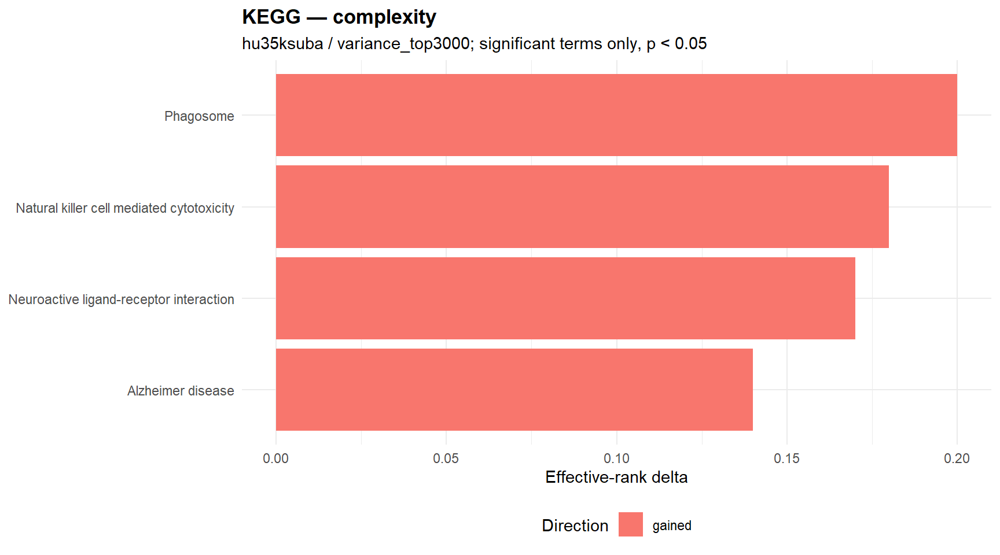
Entropy signal plot
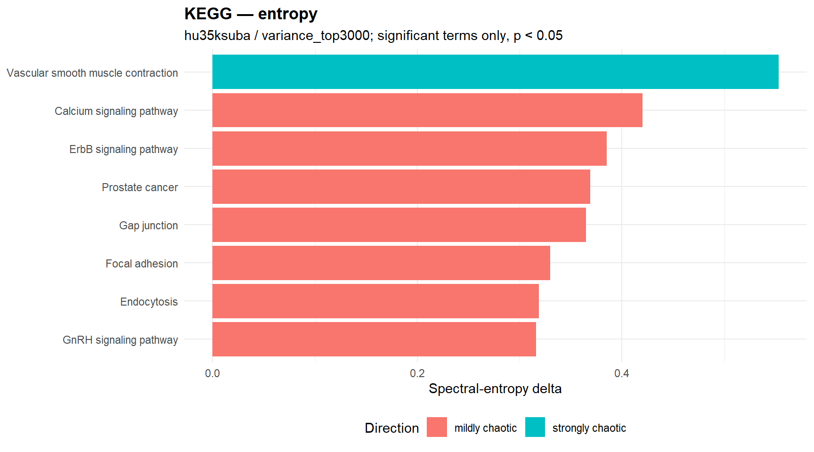
Significant complexity terms
| gene_set | semantic_block | n_shared_probes | effrank Δ | kappa Δ | direction | p_perm | status |
|---|---|---|---|---|---|---|---|
| Phagosome | NA | 30 | 0.200 | 221.920 | gained | 0.010 | ok |
| Alzheimer disease | NA | 40 | 0.140 | 189.360 | gained | 0.010 | ok |
| Natural killer cell mediated cytotoxicity | NA | 20 | 0.180 | 240.410 | gained | 0.020 | ok |
| Neuroactive ligand-receptor interaction | NA | 15 | 0.170 | 528.700 | gained | 0.020 | ok |
Significant entropy terms
| gene_set | semantic_block | n_shared_probes | spectral Δ | shannon Δ | spectral_direction | p_perm_spectral | p_perm_shannon | status |
|---|---|---|---|---|---|---|---|---|
| Vascular smooth muscle contraction | NA | 18 | 0.553 | 0.152 | strongly chaotic | <0.001 | NA | ok |
| Gap junction | NA | 12 | 0.365 | 0.151 | mildly chaotic | <0.001 | NA | ok |
| Endocytosis | NA | 39 | 0.319 | 0.151 | mildly chaotic | 0.010 | NA | ok |
| Calcium signaling pathway | NA | 22 | 0.420 | 0.152 | mildly chaotic | 0.020 | NA | ok |
| Focal adhesion | NA | 37 | 0.330 | 0.153 | mildly chaotic | 0.020 | NA | ok |
| GnRH signaling pathway | NA | 15 | 0.316 | 0.153 | mildly chaotic | 0.020 | NA | ok |
| ErbB signaling pathway | NA | 12 | 0.385 | 0.150 | mildly chaotic | 0.040 | NA | ok |
| Prostate cancer | NA | 16 | 0.369 | 0.150 | mildly chaotic | 0.040 | NA | ok |
Terms significant in both engines
No significant warehouse rows available for this section.
Context summary
| engine | n_rows | n_gene_sets | n_significant_complexity | n_significant_entropy_spectral | median_shared_probes |
|---|---|---|---|---|---|
| complexity | 13 | 13 | 0 | 0 | 47.000 |
| entropy | 13 | 13 | 0 | 5 | 47.000 |
Complexity signal plot
No significant complexity terms available for plotting.
Entropy signal plot
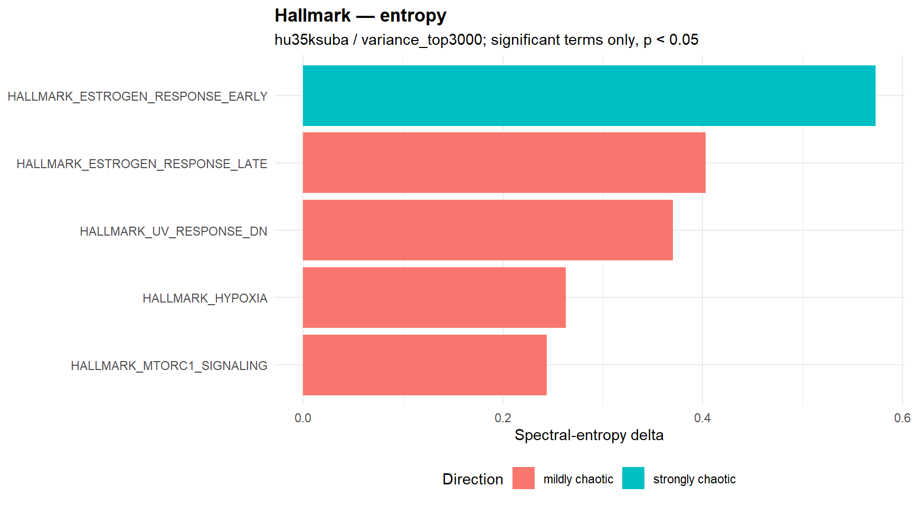
Significant complexity terms
No significant warehouse rows available for this section.
Significant entropy terms
| gene_set | semantic_block | n_shared_probes | spectral Δ | shannon Δ | spectral_direction | p_perm_spectral | p_perm_shannon | status |
|---|---|---|---|---|---|---|---|---|
| HALLMARK_ESTROGEN_RESPONSE_LATE | NA | 40 | 0.403 | 0.151 | mildly chaotic | 0.020 | NA | ok |
| HALLMARK_UV_RESPONSE_DN | NA | 41 | 0.370 | 0.150 | mildly chaotic | 0.020 | NA | ok |
| HALLMARK_HYPOXIA | NA | 60 | 0.263 | 0.153 | mildly chaotic | 0.020 | NA | ok |
| HALLMARK_MTORC1_SIGNALING | NA | 53 | 0.244 | 0.153 | mildly chaotic | 0.020 | NA | ok |
| HALLMARK_ESTROGEN_RESPONSE_EARLY | NA | 53 | 0.573 | 0.152 | strongly chaotic | 0.030 | NA | ok |
Terms significant in both engines
No significant warehouse rows available for this section.
Context summary
| engine | n_rows | n_gene_sets | n_significant_complexity | n_significant_entropy_spectral | median_shared_probes |
|---|---|---|---|---|---|
| complexity | 1608 | 1608 | 70 | 0 | 9.000 |
| entropy | 1608 | 1608 | 0 | 623 | 9.000 |
Complexity signal plot
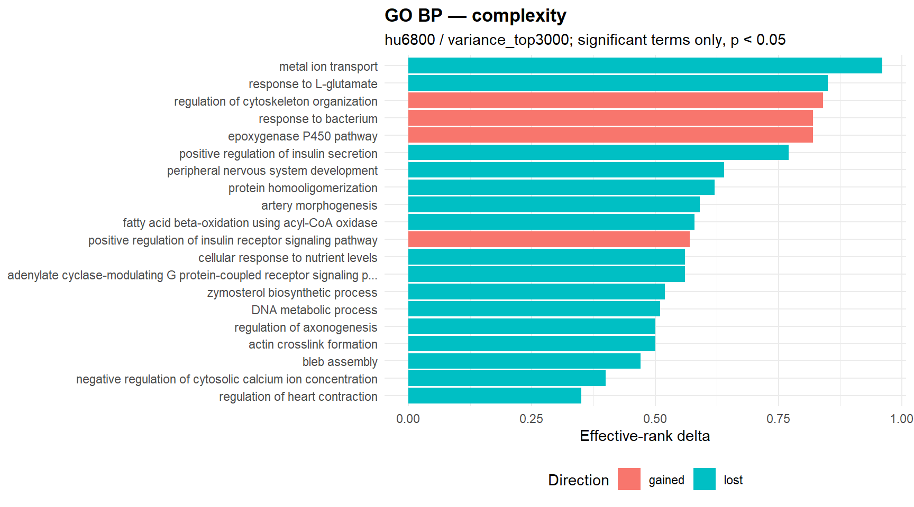
Entropy signal plot
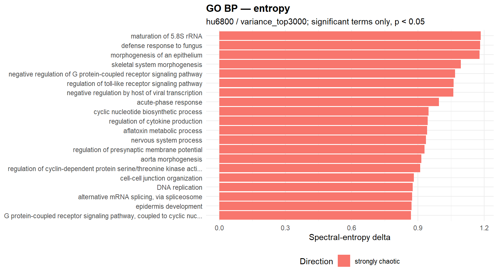
Significant complexity terms
| gene_set | semantic_block | n_shared_probes | effrank Δ | kappa Δ | direction | p_perm | status |
|---|---|---|---|---|---|---|---|
| response to L-glutamate | response to nitrogen compound | 5 | 0.850 | -374.580 | lost | <0.001 | ok |
| fatty acid beta-oxidation using acyl-CoA oxidase | fatty acid metabolic process | 5 | 0.580 | -479.560 | lost | <0.001 | ok |
| negative regulation of cytosolic calcium ion concentration | regulation of biological quality | 5 | 0.400 | -802.520 | lost | <0.001 | ok |
| cortical microtubule organization | supramolecular fiber organization | 5 | 0.280 | -2406.390 | lost | <0.001 | ok |
| growth hormone receptor signaling pathway | cellular response to nitrogen compound | 6 | 0.270 | -1354.920 | lost | <0.001 | ok |
| dendrite development | neuron projection development | 6 | 0.250 | -2141.590 | lost | <0.001 | ok |
| p38MAPK cascade | intracellular signal transduction | 6 | 0.240 | -15477.790 | lost | <0.001 | ok |
| negative regulation of JNK cascade | negative regulation of intracellular signal transduction | 8 | 0.210 | 137404.720 | gained | <0.001 | ok |
| sprouting angiogenesis | blood vessel morphogenesis | 5 | 0.200 | -1292.750 | lost | <0.001 | ok |
| sperm capacitation | reproductive process | 6 | -0.160 | -5159.040 | lost | <0.001 | ok |
| activin receptor signaling pathway | enzyme-linked receptor protein signaling pathway | 6 | 0.140 | -7314.810 | lost | <0.001 | ok |
| regulation of postsynaptic membrane neurotransmitter receptor levels | regulation of biological quality | 6 | 0.140 | -1727.400 | lost | <0.001 | ok |
| endosome to lysosome transport | intracellular transport | 5 | -0.090 | -940.380 | lost | <0.001 | ok |
| positive regulation of microtubule polymerization | regulation of cytoskeleton organization | 6 | 0.090 | 1881.490 | gained | <0.001 | ok |
| metal ion transport | metal ion transport | 6 | 0.960 | -645.210 | lost | 0.010 | ok |
| regulation of cytoskeleton organization | regulation of cytoskeleton organization | 8 | 0.840 | 145443.040 | gained | 0.010 | ok |
| adenylate cyclase-modulating G protein-coupled receptor signaling pathway | G protein-coupled receptor signaling pathway | 14 | 0.560 | -309.790 | lost | 0.010 | ok |
| bleb assembly | plasma membrane bounded cell projection organization | 5 | 0.470 | -659.410 | lost | 0.010 | ok |
| retinoic acid receptor signaling pathway | intracellular receptor signaling pathway | 5 | 0.340 | -2759.700 | lost | 0.010 | ok |
| positive regulation of interferon-alpha production | positive regulation of cytokine production | 8 | 0.290 | 331841.910 | gained | 0.010 | ok |
Significant entropy terms
| gene_set | semantic_block | n_shared_probes | spectral Δ | shannon Δ | spectral_direction | p_perm_spectral | p_perm_shannon | status |
|---|---|---|---|---|---|---|---|---|
| maturation of 5.8S rRNA | ribonucleoprotein complex biogenesis | 5 | 1.184 | 0.191 | strongly chaotic | <0.001 | NA | ok |
| defense response to fungus | response to other organism | 10 | 1.182 | 0.191 | strongly chaotic | <0.001 | NA | ok |
| morphogenesis of an epithelium | tissue morphogenesis | 13 | 1.179 | 0.194 | strongly chaotic | <0.001 | NA | ok |
| skeletal system morphogenesis | animal organ morphogenesis | 5 | 1.095 | 0.191 | strongly chaotic | <0.001 | NA | ok |
| negative regulation by host of viral transcription | biological process involved in interspecies interaction between organisms | 5 | 1.061 | 0.185 | strongly chaotic | <0.001 | NA | ok |
| cyclic nucleotide biosynthetic process | nucleoside phosphate biosynthetic process | 6 | 0.948 | 0.190 | strongly chaotic | <0.001 | NA | ok |
| regulation of cytokine production | regulation of cytokine production | 18 | 0.945 | 0.194 | strongly chaotic | <0.001 | NA | ok |
| aflatoxin metabolic process | biological_process | 6 | 0.942 | 0.195 | strongly chaotic | <0.001 | NA | ok |
| nervous system process | nervous system process | 6 | 0.936 | 0.190 | strongly chaotic | <0.001 | NA | ok |
| aorta morphogenesis | blood vessel morphogenesis | 6 | 0.916 | 0.192 | strongly chaotic | <0.001 | NA | ok |
| regulation of cyclin-dependent protein serine/threonine kinase activity | regulation of catalytic activity | 5 | 0.911 | 0.192 | strongly chaotic | <0.001 | NA | ok |
| cell-cell junction organization | cell junction organization | 11 | 0.882 | 0.193 | strongly chaotic | <0.001 | NA | ok |
| DNA replication | DNA metabolic process | 25 | 0.877 | 0.191 | strongly chaotic | <0.001 | NA | ok |
| epidermis development | tissue development | 24 | 0.871 | 0.193 | strongly chaotic | <0.001 | NA | ok |
| ERBB signaling pathway | cell surface receptor protein tyrosine kinase signaling pathway | 8 | 0.866 | 0.189 | strongly chaotic | <0.001 | NA | ok |
| calcium-mediated signaling | intracellular signal transduction | 23 | 0.838 | 0.190 | strongly chaotic | <0.001 | NA | ok |
| positive regulation of intrinsic apoptotic signaling pathway | apoptotic signaling pathway | 12 | 0.836 | 0.194 | strongly chaotic | <0.001 | NA | ok |
| positive regulation of extrinsic apoptotic signaling pathway | apoptotic signaling pathway | 10 | 0.829 | 0.191 | strongly chaotic | <0.001 | NA | ok |
| triglyceride metabolic process | glycerolipid metabolic process | 8 | 0.825 | 0.190 | strongly chaotic | <0.001 | NA | ok |
| regulation of protein metabolic process | regulation of protein metabolic process | 7 | 0.825 | 0.188 | strongly chaotic | <0.001 | NA | ok |
Terms significant in both engines
| gene_set | semantic_block | n_shared_probes | complexity_effrank Δ | complexity_direction | complexity_p_perm | entropy_spectral Δ | entropy_spectral_direction | entropy_p_perm_spectral | joint_rank_score |
|---|---|---|---|---|---|---|---|---|---|
| fatty acid beta-oxidation using acyl-CoA oxidase | fatty acid metabolic process | 5 | 0.580 | lost | <0.001 | 0.521 | strongly chaotic | <0.001 | 615.305 |
| response to L-glutamate | response to nitrogen compound | 5 | 0.850 | lost | <0.001 | 0.822 | strongly chaotic | <0.001 | 615.305 |
| dendrite development | neuron projection development | 6 | 0.250 | lost | <0.001 | 0.291 | mildly chaotic | 0.020 | 309.352 |
| protein export from nucleus | protein transport | 8 | 0.280 | gained | 0.030 | 0.320 | mildly chaotic | <0.001 | 309.176 |
| peripheral nervous system development | nervous system development | 7 | 0.640 | lost | 0.040 | 0.623 | strongly chaotic | <0.001 | 309.051 |
| epoxygenase P450 pathway | fatty acid metabolic process | 16 | 0.820 | gained | 0.040 | 0.692 | strongly chaotic | <0.001 | 309.051 |
| positive regulation of insulin secretion | signal release | 16 | 0.770 | lost | 0.020 | 0.690 | strongly chaotic | 0.010 | 3.699 |
| bleb assembly | plasma membrane bounded cell projection organization | 5 | 0.470 | lost | 0.010 | 0.492 | mildly chaotic | 0.020 | 3.699 |
| cellular response to nutrient levels | biological_process | 6 | 0.560 | lost | 0.030 | 0.527 | strongly chaotic | 0.010 | 3.523 |
| embryonic cranial skeleton morphogenesis | embryo development | 5 | 0.270 | lost | 0.030 | 0.311 | mildly chaotic | 0.010 | 3.523 |
| negative regulation of cellular senescence | cellular response to stress | 9 | 0.220 | lost | 0.030 | 0.272 | mildly chaotic | 0.010 | 3.523 |
| microtubule cytoskeleton organization | microtubule cytoskeleton organization | 17 | 0.230 | gained | 0.010 | 0.255 | mildly chaotic | 0.040 | 3.398 |
| alcohol metabolic process | alcohol metabolic process | 7 | 0.210 | lost | 0.020 | 0.248 | mildly chaotic | 0.020 | 3.398 |
| response to bacterium | response to other organism | 12 | 0.820 | gained | 0.020 | 0.625 | strongly chaotic | 0.020 | 3.398 |
| positive regulation of insulin receptor signaling pathway | cellular response to nitrogen compound | 9 | 0.570 | gained | 0.020 | 0.421 | mildly chaotic | 0.020 | 3.398 |
| artery morphogenesis | blood vessel morphogenesis | 7 | 0.590 | lost | 0.020 | 0.557 | strongly chaotic | 0.030 | 3.222 |
| zymosterol biosynthetic process | alcohol metabolic process | 7 | 0.520 | lost | 0.040 | 0.497 | mildly chaotic | 0.020 | 3.097 |
| actin crosslink formation | actin cytoskeleton organization | 6 | 0.500 | lost | 0.040 | 0.455 | mildly chaotic | 0.020 | 3.097 |
| protein homooligomerization | protein-containing complex assembly | 16 | 0.620 | lost | 0.040 | 0.548 | strongly chaotic | 0.040 | 2.796 |
GO semantic clusters
| semantic_cluster_id | semantic_block_name | n_rows | n_terms | n_sig_complexity | n_sig_entropy_spectral | mean_shared_probes |
|---|---|---|---|---|---|---|
| BP_GO_0001819_1 | positive regulation of cytokine production | 24 | 12 | 0 | 6 | 16.167 |
| BP_GO_0007186_2 | G protein-coupled receptor signaling pathway | 14 | 7 | 1 | 4 | 31.857 |
| BP_GO_0048514_1 | blood vessel morphogenesis | 10 | 5 | 2 | 3 | 20.800 |
| BP_GO_0006066_6 | alcohol metabolic process | 8 | 4 | 1 | 4 | 10.500 |
| BP_GO_1902533_1 | positive regulation of intracellular signal transduction | 16 | 8 | 0 | 4 | 23.000 |
| BP_GO_0007417_2 | central nervous system development | 10 | 5 | 0 | 4 | 16.200 |
| BP_GO_0002757_1 | immune response-activating signaling pathway | 8 | 4 | 0 | 4 | 19.500 |
| BP_GO_0065003_7 | protein-containing complex assembly | 8 | 4 | 1 | 3 | 11.250 |
| BP_GO_0071363_6 | cellular response to growth factor stimulus | 8 | 4 | 0 | 4 | 16.000 |
| BP_GO_0007399_1 | nervous system development | 6 | 3 | 1 | 3 | 42.667 |
| BP_GO_0051254_1 | positive regulation of RNA metabolic process | 14 | 7 | 1 | 2 | 75.429 |
| BP_GO_0007166_1 | cell surface receptor signaling pathway | 12 | 6 | 0 | 3 | 29.000 |
| BP_GO_0035556_1 | intracellular signal transduction | 12 | 6 | 0 | 3 | 29.333 |
| BP_GO_0007169_1 | cell surface receptor protein tyrosine kinase signaling pathway | 10 | 5 | 1 | 2 | 16.000 |
| BP_GO_0009967_1 | positive regulation of signal transduction | 10 | 5 | 0 | 3 | 7.200 |
| BP_GO_0022603_2 | regulation of anatomical structure morphogenesis | 8 | 4 | 0 | 3 | 26.250 |
| BP_GO_0045934_1 | negative regulation of nucleobase-containing compound metabolic process | 8 | 4 | 0 | 3 | 94.250 |
| BP_GO_0051707_3 | response to other organism | 8 | 4 | 1 | 2 | 24.750 |
| BP_GO_0006631_4 | fatty acid metabolic process | 6 | 3 | 1 | 2 | 10.333 |
| BP_GO_0006631_6 | fatty acid metabolic process | 6 | 3 | 1 | 2 | 11.000 |
Context summary
| engine | n_rows | n_gene_sets | n_significant_complexity | n_significant_entropy_spectral | median_shared_probes |
|---|---|---|---|---|---|
| complexity | 521 | 521 | 23 | 0 | 10.000 |
| entropy | 521 | 521 | 0 | 221 | 10.000 |
Complexity signal plot
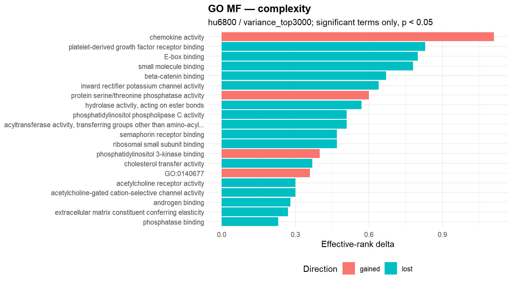
Entropy signal plot
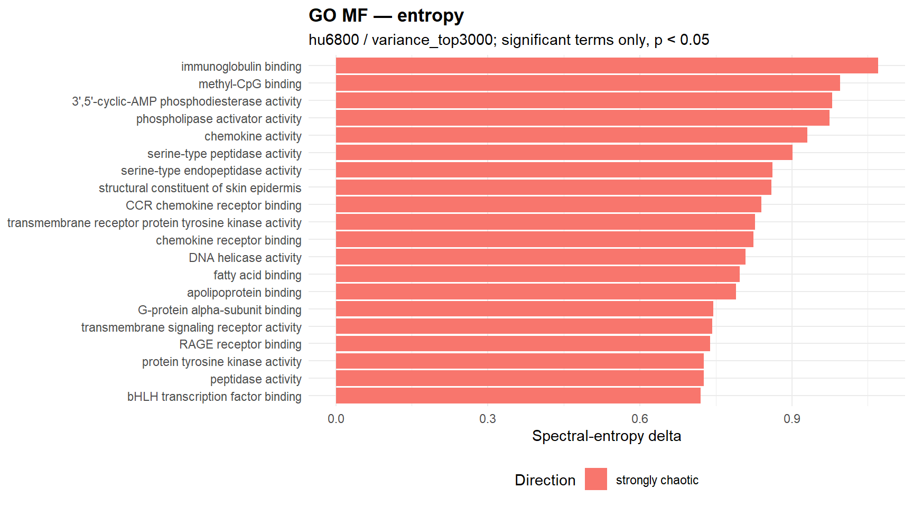
Significant complexity terms
| gene_set | semantic_block | n_shared_probes | effrank Δ | kappa Δ | direction | p_perm | status |
|---|---|---|---|---|---|---|---|
| chemokine activity | signaling receptor binding | 17 | 1.110 | 144.710 | gained | <0.001 | ok |
| E-box binding | DNA binding | 13 | 0.800 | -334.040 | lost | <0.001 | ok |
| beta-catenin binding | protein binding | 28 | 0.670 | -85.360 | lost | <0.001 | ok |
| GO:0140677 | molecular function regulator activity | 10 | 0.360 | 1596.740 | gained | <0.001 | ok |
| supercoiled DNA binding | DNA binding | 5 | 0.100 | -863.060 | lost | <0.001 | ok |
| hydrolase activity, acting on ester bonds | hydrolase activity, acting on ester bonds | 6 | 0.570 | -2035.900 | lost | 0.010 | ok |
| acyltransferase activity, transferring groups other than amino-acyl groups | acyltransferase activity | 10 | 0.510 | -1146.610 | lost | 0.010 | ok |
| ribosomal small subunit binding | protein-containing complex binding | 5 | 0.470 | -937.590 | lost | 0.010 | ok |
| cholesterol transfer activity | transporter activity | 5 | 0.370 | -395.130 | lost | 0.010 | ok |
| androgen binding | binding | 5 | 0.280 | -596.520 | lost | 0.010 | ok |
| RNA cap binding | RNA binding | 6 | 0.220 | -1979.590 | lost | 0.010 | ok |
| platelet-derived growth factor receptor binding | signaling receptor binding | 7 | 0.830 | -9874.320 | lost | 0.020 | ok |
| inward rectifier potassium channel activity | gated channel activity | 5 | 0.640 | -504.060 | lost | 0.020 | ok |
| phosphatidylinositol phospholipase C activity | phosphoric ester hydrolase activity | 6 | 0.510 | -2247.390 | lost | 0.020 | ok |
| semaphorin receptor binding | signaling receptor binding | 5 | 0.470 | -552.540 | lost | 0.020 | ok |
| phosphatidylinositol 3-kinase binding | protein binding | 10 | 0.400 | 1683.330 | gained | 0.020 | ok |
| acetylcholine receptor activity | transmembrane signaling receptor activity | 6 | 0.300 | -3749.130 | lost | 0.020 | ok |
| acetylcholine-gated cation-selective channel activity | gated channel activity | 6 | 0.300 | -3749.130 | lost | 0.020 | ok |
| NADPH binding | anion binding | 5 | 0.080 | -338.120 | lost | 0.020 | ok |
| small molecule binding | small molecule binding | 5 | 0.780 | -335.250 | lost | 0.040 | ok |
Significant entropy terms
| gene_set | semantic_block | n_shared_probes | spectral Δ | shannon Δ | spectral_direction | p_perm_spectral | p_perm_shannon | status |
|---|---|---|---|---|---|---|---|---|
| 3’,5’-cyclic-AMP phosphodiesterase activity | phosphoric ester hydrolase activity | 6 | 0.980 | 0.194 | strongly chaotic | <0.001 | NA | ok |
| chemokine activity | signaling receptor binding | 17 | 0.931 | 0.190 | strongly chaotic | <0.001 | NA | ok |
| serine-type peptidase activity | peptidase activity | 22 | 0.901 | 0.196 | strongly chaotic | <0.001 | NA | ok |
| serine-type endopeptidase activity | peptidase activity | 32 | 0.862 | 0.194 | strongly chaotic | <0.001 | NA | ok |
| transmembrane receptor protein tyrosine kinase activity | protein kinase activity | 22 | 0.827 | 0.191 | strongly chaotic | <0.001 | NA | ok |
| fatty acid binding | lipid binding | 16 | 0.797 | 0.195 | strongly chaotic | <0.001 | NA | ok |
| G-protein alpha-subunit binding | protein binding | 5 | 0.745 | 0.200 | strongly chaotic | <0.001 | NA | ok |
| transmembrane signaling receptor activity | transmembrane signaling receptor activity | 47 | 0.743 | 0.192 | strongly chaotic | <0.001 | NA | ok |
| protein tyrosine kinase activity | protein kinase activity | 41 | 0.726 | 0.192 | strongly chaotic | <0.001 | NA | ok |
| peptidase activity | peptidase activity | 82 | 0.726 | 0.194 | strongly chaotic | <0.001 | NA | ok |
| bHLH transcription factor binding | transcription factor binding | 9 | 0.720 | 0.192 | strongly chaotic | <0.001 | NA | ok |
| oxidoreductase activity, acting on paired donors, with incorporation or reduction of molecular oxygen, reduced flavin or flavoprotein as one donor, and incorporation of one atom of oxygen | oxidoreductase activity | 24 | 0.717 | 0.194 | strongly chaotic | <0.001 | NA | ok |
| immunoglobulin receptor binding | signaling receptor binding | 12 | 0.706 | 0.188 | strongly chaotic | <0.001 | NA | ok |
| G protein-coupled peptide receptor activity | transmembrane signaling receptor activity | 6 | 0.703 | 0.191 | strongly chaotic | <0.001 | NA | ok |
| cysteine-type endopeptidase inhibitor activity | enzyme regulator activity | 11 | 0.694 | 0.196 | strongly chaotic | <0.001 | NA | ok |
| aminopeptidase activity | peptidase activity | 6 | 0.693 | 0.191 | strongly chaotic | <0.001 | NA | ok |
| CD4 receptor binding | signaling receptor binding | 7 | 0.688 | 0.196 | strongly chaotic | <0.001 | NA | ok |
| phospholipid binding | lipid binding | 19 | 0.683 | 0.192 | strongly chaotic | <0.001 | NA | ok |
| small molecule binding | small molecule binding | 5 | 0.683 | 0.198 | strongly chaotic | <0.001 | NA | ok |
| 3’,5’-cyclic-nucleotide phosphodiesterase activity | phosphoric ester hydrolase activity | 6 | 0.677 | 0.196 | strongly chaotic | <0.001 | NA | ok |
Terms significant in both engines
| gene_set | semantic_block | n_shared_probes | complexity_effrank Δ | complexity_direction | complexity_p_perm | entropy_spectral Δ | entropy_spectral_direction | entropy_p_perm_spectral | joint_rank_score |
|---|---|---|---|---|---|---|---|---|---|
| chemokine activity | signaling receptor binding | 17 | 1.110 | gained | <0.001 | 0.931 | strongly chaotic | <0.001 | 615.305 |
| beta-catenin binding | protein binding | 28 | 0.670 | lost | <0.001 | 0.591 | strongly chaotic | <0.001 | 615.305 |
| cholesterol transfer activity | transporter activity | 5 | 0.370 | lost | 0.010 | 0.398 | mildly chaotic | <0.001 | 309.653 |
| phosphatidylinositol phospholipase C activity | phosphoric ester hydrolase activity | 6 | 0.510 | lost | 0.020 | 0.557 | strongly chaotic | <0.001 | 309.352 |
| small molecule binding | small molecule binding | 5 | 0.780 | lost | 0.040 | 0.683 | strongly chaotic | <0.001 | 309.051 |
| acyltransferase activity, transferring groups other than amino-acyl groups | acyltransferase activity | 10 | 0.510 | lost | 0.010 | 0.486 | mildly chaotic | 0.010 | 4.000 |
| hydrolase activity, acting on ester bonds | hydrolase activity, acting on ester bonds | 6 | 0.570 | lost | 0.010 | 0.624 | strongly chaotic | 0.010 | 4.000 |
| phosphatase binding | enzyme binding | 6 | 0.230 | lost | 0.040 | 0.285 | mildly chaotic | 0.030 | 2.921 |
GO semantic clusters
| semantic_cluster_id | semantic_block_name | n_rows | n_terms | n_sig_complexity | n_sig_entropy_spectral | mean_shared_probes |
|---|---|---|---|---|---|---|
| MF_GO_0030234_5 | enzyme regulator activity | 12 | 6 | 0 | 4 | 18.667 |
| MF_GO_0098772_3 | molecular function regulator activity | 12 | 6 | 0 | 4 | 36.000 |
| MF_GO_0019899_4 | enzyme binding | 6 | 3 | 1 | 3 | 16.000 |
| MF_GO_0004672_1 | protein kinase activity | 8 | 4 | 0 | 3 | 46.000 |
| MF_GO_0008233_1 | peptidase activity | 8 | 4 | 0 | 3 | 34.750 |
| MF_GO_0005515_17 | protein binding | 6 | 3 | 0 | 3 | 39.333 |
| MF_GO_0042578_1 | phosphoric ester hydrolase activity | 6 | 3 | 0 | 3 | 6.000 |
| MF_GO_0043169_1 | cation binding | 6 | 3 | 0 | 3 | 255.000 |
| MF_GO_0016746_7 | acyltransferase activity | 4 | 2 | 1 | 2 | 19.000 |
| MF_GO_0003677_3 | DNA binding | 10 | 5 | 0 | 2 | 40.000 |
| MF_GO_0003677_4 | DNA binding | 8 | 4 | 1 | 1 | 53.250 |
| MF_GO_0003677_5 | DNA binding | 8 | 4 | 0 | 2 | 111.750 |
| MF_GO_0005261_1 | monoatomic cation channel activity | 8 | 4 | 0 | 2 | 8.750 |
| MF_GO_0005102_17 | signaling receptor binding | 6 | 3 | 0 | 2 | 7.000 |
| MF_GO_0008134_7 | transcription factor binding | 6 | 3 | 0 | 2 | 27.000 |
| MF_GO_0042578_7 | phosphoric ester hydrolase activity | 6 | 3 | 1 | 1 | 21.667 |
| MF_GO_0003824_6 | catalytic activity | 4 | 2 | 0 | 2 | 63.000 |
| MF_GO_0005515_44 | protein binding | 4 | 2 | 0 | 2 | 335.500 |
| MF_GO_0005515_61 | protein binding | 4 | 2 | 0 | 2 | 70.000 |
| MF_GO_0008092_3 | cytoskeletal protein binding | 4 | 2 | 0 | 2 | 21.500 |
Context summary
| engine | n_rows | n_gene_sets | n_significant_complexity | n_significant_entropy_spectral | median_shared_probes |
|---|---|---|---|---|---|
| complexity | 57 | 57 | 1 | 0 | 48.000 |
| entropy | 57 | 57 | 0 | 43 | 48.000 |
Complexity signal plot
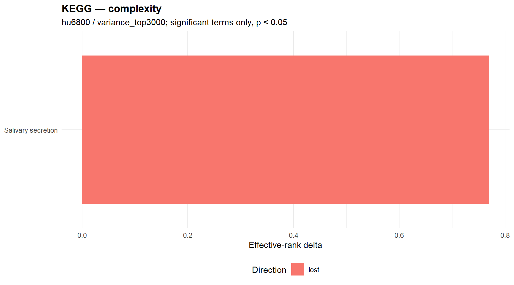
Entropy signal plot
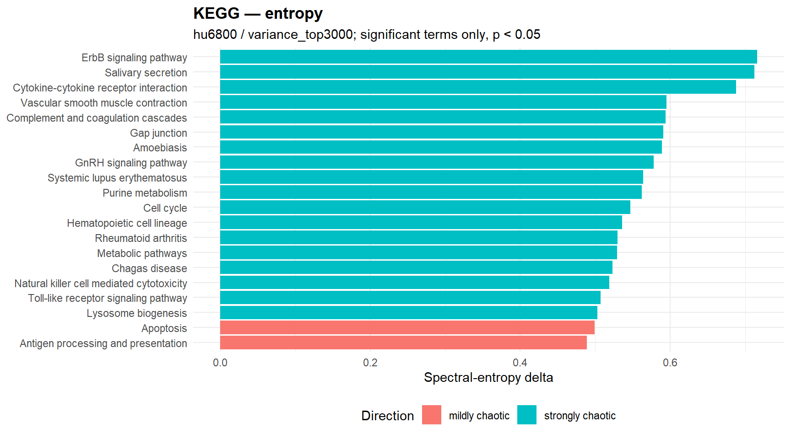
Significant complexity terms
| gene_set | semantic_block | n_shared_probes | effrank Δ | kappa Δ | direction | p_perm | status |
|---|---|---|---|---|---|---|---|
| Salivary secretion | NA | 42 | 0.770 | -80.390 | lost | 0.030 | ok |
Significant entropy terms
| gene_set | semantic_block | n_shared_probes | spectral Δ | shannon Δ | spectral_direction | p_perm_spectral | p_perm_shannon | status |
|---|---|---|---|---|---|---|---|---|
| ErbB signaling pathway | NA | 28 | 0.716 | 0.190 | strongly chaotic | <0.001 | NA | ok |
| Salivary secretion | NA | 42 | 0.712 | 0.194 | strongly chaotic | <0.001 | NA | ok |
| Cytokine-cytokine receptor interaction | NA | 90 | 0.688 | 0.193 | strongly chaotic | <0.001 | NA | ok |
| Vascular smooth muscle contraction | NA | 43 | 0.595 | 0.196 | strongly chaotic | <0.001 | NA | ok |
| Complement and coagulation cascades | NA | 33 | 0.594 | 0.195 | strongly chaotic | <0.001 | NA | ok |
| Gap junction | NA | 30 | 0.591 | 0.194 | strongly chaotic | <0.001 | NA | ok |
| Amoebiasis | NA | 54 | 0.589 | 0.194 | strongly chaotic | <0.001 | NA | ok |
| GnRH signaling pathway | NA | 34 | 0.578 | 0.194 | strongly chaotic | <0.001 | NA | ok |
| Cell cycle | NA | 48 | 0.547 | 0.195 | strongly chaotic | <0.001 | NA | ok |
| Rheumatoid arthritis | NA | 53 | 0.530 | 0.194 | strongly chaotic | <0.001 | NA | ok |
| Chagas disease | NA | 53 | 0.523 | 0.195 | strongly chaotic | <0.001 | NA | ok |
| Natural killer cell mediated cytotoxicity | NA | 50 | 0.519 | 0.196 | strongly chaotic | <0.001 | NA | ok |
| Lysosome biogenesis | NA | 38 | 0.503 | 0.192 | strongly chaotic | <0.001 | NA | ok |
| Pancreatic secretion | NA | 38 | 0.482 | 0.194 | mildly chaotic | <0.001 | NA | ok |
| Toxoplasmosis | NA | 68 | 0.473 | 0.193 | mildly chaotic | <0.001 | NA | ok |
| Pathways in cancer | NA | 133 | 0.454 | 0.193 | mildly chaotic | <0.001 | NA | ok |
| ECM-receptor interaction | NA | 44 | 0.453 | 0.193 | mildly chaotic | <0.001 | NA | ok |
| Cell adhesion molecule (CAM) interaction | NA | 55 | 0.422 | 0.197 | mildly chaotic | <0.001 | NA | ok |
| Endocytosis | NA | 62 | 0.412 | 0.195 | mildly chaotic | <0.001 | NA | ok |
| Calcium signaling pathway | NA | 62 | 0.409 | 0.193 | mildly chaotic | <0.001 | NA | ok |
Terms significant in both engines
| gene_set | semantic_block | n_shared_probes | complexity_effrank Δ | complexity_direction | complexity_p_perm | entropy_spectral Δ | entropy_spectral_direction | entropy_p_perm_spectral | joint_rank_score |
|---|---|---|---|---|---|---|---|---|---|
| Salivary secretion | NA | 42 | 0.770 | lost | 0.030 | 0.712 | strongly chaotic | <0.001 | 309.176 |
Context summary
| engine | n_rows | n_gene_sets | n_significant_complexity | n_significant_entropy_spectral | median_shared_probes |
|---|---|---|---|---|---|
| complexity | 13 | 13 | 0 | 0 | 95.000 |
| entropy | 13 | 13 | 0 | 9 | 95.000 |
Complexity signal plot
No significant complexity terms available for plotting.
Entropy signal plot
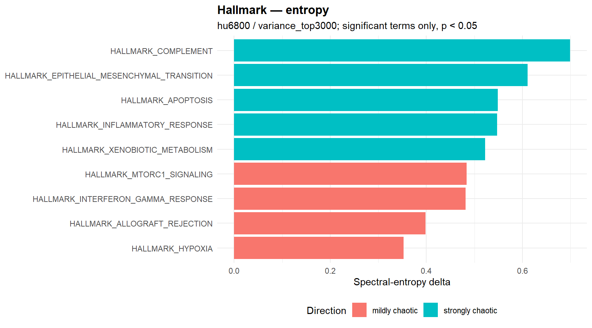
Significant complexity terms
No significant warehouse rows available for this section.
Significant entropy terms
| gene_set | semantic_block | n_shared_probes | spectral Δ | shannon Δ | spectral_direction | p_perm_spectral | p_perm_shannon | status |
|---|---|---|---|---|---|---|---|---|
| HALLMARK_COMPLEMENT | NA | 90 | 0.699 | 0.196 | strongly chaotic | <0.001 | NA | ok |
| HALLMARK_EPITHELIAL_MESENCHYMAL_TRANSITION | NA | 120 | 0.611 | 0.194 | strongly chaotic | <0.001 | NA | ok |
| HALLMARK_APOPTOSIS | NA | 99 | 0.549 | 0.194 | strongly chaotic | <0.001 | NA | ok |
| HALLMARK_INFLAMMATORY_RESPONSE | NA | 75 | 0.547 | 0.192 | strongly chaotic | <0.001 | NA | ok |
| HALLMARK_XENOBIOTIC_METABOLISM | NA | 89 | 0.522 | 0.193 | strongly chaotic | <0.001 | NA | ok |
| HALLMARK_INTERFERON_GAMMA_RESPONSE | NA | 88 | 0.482 | 0.197 | mildly chaotic | <0.001 | NA | ok |
| HALLMARK_HYPOXIA | NA | 89 | 0.353 | 0.193 | mildly chaotic | <0.001 | NA | ok |
| HALLMARK_MTORC1_SIGNALING | NA | 95 | 0.484 | 0.191 | mildly chaotic | 0.010 | NA | ok |
| HALLMARK_ALLOGRAFT_REJECTION | NA | 103 | 0.398 | 0.197 | mildly chaotic | 0.020 | NA | ok |
Terms significant in both engines
No significant warehouse rows available for this section.
Skipped / inadmissible gene sets
These counts summarize chip-level gene-set admissibility failures. They are not interpreted as repeated comparison-level biological results.
| comparison | chip | filter_regime | gene_set_mode | engine | reason | n_skipped |
|---|---|---|---|---|---|---|
| PR/PRAD | hu35ksuba | variance_top3000 | GO_BP | complexity | usable gene-set probes below biological admissibility threshold: 0 < 5 | 70 |
| PR/PRAD | hu35ksuba | variance_top3000 | GO_BP | complexity | usable gene-set probes below biological admissibility threshold: 1 < 5 | 167 |
| PR/PRAD | hu35ksuba | variance_top3000 | GO_BP | complexity | usable gene-set probes below biological admissibility threshold: 2 < 5 | 292 |
| PR/PRAD | hu35ksuba | variance_top3000 | GO_BP | complexity | usable gene-set probes below biological admissibility threshold: 3 < 5 | 317 |
| PR/PRAD | hu35ksuba | variance_top3000 | GO_BP | complexity | usable gene-set probes below biological admissibility threshold: 4 < 5 | 296 |
| PR/PRAD | hu35ksuba | variance_top3000 | GO_BP | entropy | usable gene-set probes below biological admissibility threshold: 0 < 5 | 70 |
| PR/PRAD | hu35ksuba | variance_top3000 | GO_BP | entropy | usable gene-set probes below biological admissibility threshold: 1 < 5 | 167 |
| PR/PRAD | hu35ksuba | variance_top3000 | GO_BP | entropy | usable gene-set probes below biological admissibility threshold: 2 < 5 | 292 |
| PR/PRAD | hu35ksuba | variance_top3000 | GO_BP | entropy | usable gene-set probes below biological admissibility threshold: 3 < 5 | 317 |
| PR/PRAD | hu35ksuba | variance_top3000 | GO_BP | entropy | usable gene-set probes below biological admissibility threshold: 4 < 5 | 296 |
| PR/PRAD | hu35ksuba | variance_top3000 | GO_MF | complexity | usable gene-set probes below biological admissibility threshold: 0 < 5 | 19 |
| PR/PRAD | hu35ksuba | variance_top3000 | GO_MF | complexity | usable gene-set probes below biological admissibility threshold: 1 < 5 | 64 |
| PR/PRAD | hu35ksuba | variance_top3000 | GO_MF | complexity | usable gene-set probes below biological admissibility threshold: 2 < 5 | 105 |
| PR/PRAD | hu35ksuba | variance_top3000 | GO_MF | complexity | usable gene-set probes below biological admissibility threshold: 3 < 5 | 103 |
| PR/PRAD | hu35ksuba | variance_top3000 | GO_MF | complexity | usable gene-set probes below biological admissibility threshold: 4 < 5 | 72 |
| PR/PRAD | hu35ksuba | variance_top3000 | GO_MF | entropy | usable gene-set probes below biological admissibility threshold: 0 < 5 | 19 |
| PR/PRAD | hu35ksuba | variance_top3000 | GO_MF | entropy | usable gene-set probes below biological admissibility threshold: 1 < 5 | 64 |
| PR/PRAD | hu35ksuba | variance_top3000 | GO_MF | entropy | usable gene-set probes below biological admissibility threshold: 2 < 5 | 105 |
| PR/PRAD | hu35ksuba | variance_top3000 | GO_MF | entropy | usable gene-set probes below biological admissibility threshold: 3 < 5 | 103 |
| PR/PRAD | hu35ksuba | variance_top3000 | GO_MF | entropy | usable gene-set probes below biological admissibility threshold: 4 < 5 | 72 |
| PR/PRAD | hu35ksuba | variance_top3000 | KEGG | complexity | usable gene-set probes below biological admissibility threshold: 9 < 10 | 1 |
| PR/PRAD | hu35ksuba | variance_top3000 | KEGG | entropy | usable gene-set probes below biological admissibility threshold: 9 < 10 | 1 |
| PR/PRAD | hu6800 | limma | GO_BP | complexity | <2 probes in one or both comparison matrices; engine cannot compute stable pairwise descriptor | 1 |
| PR/PRAD | hu6800 | limma | GO_BP | entropy | <2 probes in one or both comparison matrices; engine cannot compute stable pairwise descriptor | 1 |
| PR/PRAD | hu6800 | limma | GO_MF | complexity | <2 probes in one or both comparison matrices; engine cannot compute stable pairwise descriptor | 1 |
| PR/PRAD | hu6800 | limma | GO_MF | entropy | <2 probes in one or both comparison matrices; engine cannot compute stable pairwise descriptor | 1 |
| PR/PRAD | hu6800 | limma | KEGG | complexity | <2 probes in one or both comparison matrices; engine cannot compute stable pairwise descriptor | 1 |
| PR/PRAD | hu6800 | limma | KEGG | entropy | <2 probes in one or both comparison matrices; engine cannot compute stable pairwise descriptor | 1 |
| PR/PRAD | hu6800 | limma | MSIGDB | complexity | <2 probes in one or both comparison matrices; engine cannot compute stable pairwise descriptor | 1 |
| PR/PRAD | hu6800 | limma | MSIGDB | entropy | <2 probes in one or both comparison matrices; engine cannot compute stable pairwise descriptor | 1 |
| PR/PRAD | hu6800 | variance_top3000 | GO_BP | complexity | usable gene-set probes below biological admissibility threshold: 0 < 5 | 8 |
| PR/PRAD | hu6800 | variance_top3000 | GO_BP | complexity | usable gene-set probes below biological admissibility threshold: 1 < 5 | 85 |
| PR/PRAD | hu6800 | variance_top3000 | GO_BP | complexity | usable gene-set probes below biological admissibility threshold: 2 < 5 | 183 |
| PR/PRAD | hu6800 | variance_top3000 | GO_BP | complexity | usable gene-set probes below biological admissibility threshold: 3 < 5 | 298 |
| PR/PRAD | hu6800 | variance_top3000 | GO_BP | complexity | usable gene-set probes below biological admissibility threshold: 4 < 5 | 301 |
| PR/PRAD | hu6800 | variance_top3000 | GO_BP | entropy | usable gene-set probes below biological admissibility threshold: 0 < 5 | 8 |
| PR/PRAD | hu6800 | variance_top3000 | GO_BP | entropy | usable gene-set probes below biological admissibility threshold: 1 < 5 | 85 |
| PR/PRAD | hu6800 | variance_top3000 | GO_BP | entropy | usable gene-set probes below biological admissibility threshold: 2 < 5 | 183 |
| PR/PRAD | hu6800 | variance_top3000 | GO_BP | entropy | usable gene-set probes below biological admissibility threshold: 3 < 5 | 298 |
| PR/PRAD | hu6800 | variance_top3000 | GO_BP | entropy | usable gene-set probes below biological admissibility threshold: 4 < 5 | 301 |
| PR/PRAD | hu6800 | variance_top3000 | GO_MF | complexity | usable gene-set probes below biological admissibility threshold: 0 < 5 | 10 |
| PR/PRAD | hu6800 | variance_top3000 | GO_MF | complexity | usable gene-set probes below biological admissibility threshold: 1 < 5 | 47 |
| PR/PRAD | hu6800 | variance_top3000 | GO_MF | complexity | usable gene-set probes below biological admissibility threshold: 2 < 5 | 90 |
| PR/PRAD | hu6800 | variance_top3000 | GO_MF | complexity | usable gene-set probes below biological admissibility threshold: 3 < 5 | 117 |
| PR/PRAD | hu6800 | variance_top3000 | GO_MF | complexity | usable gene-set probes below biological admissibility threshold: 4 < 5 | 106 |
| PR/PRAD | hu6800 | variance_top3000 | GO_MF | entropy | usable gene-set probes below biological admissibility threshold: 0 < 5 | 10 |
| PR/PRAD | hu6800 | variance_top3000 | GO_MF | entropy | usable gene-set probes below biological admissibility threshold: 1 < 5 | 47 |
| PR/PRAD | hu6800 | variance_top3000 | GO_MF | entropy | usable gene-set probes below biological admissibility threshold: 2 < 5 | 90 |
| PR/PRAD | hu6800 | variance_top3000 | GO_MF | entropy | usable gene-set probes below biological admissibility threshold: 3 < 5 | 117 |
| PR/PRAD | hu6800 | variance_top3000 | GO_MF | entropy | usable gene-set probes below biological admissibility threshold: 4 < 5 | 106 |
Interpretation note
These panels are intended to support exploratory biological reading of structurally characterized tumor states. Stronger interpretive priority should be given to signals that recur within a chip across filtering regimes, and then to patterns that recur across chips, engines, and semantic clusters. Results should not be interpreted as pooled chip-level or pooled filter-level evidence unless a later concordance module explicitly evaluates that recurrence.